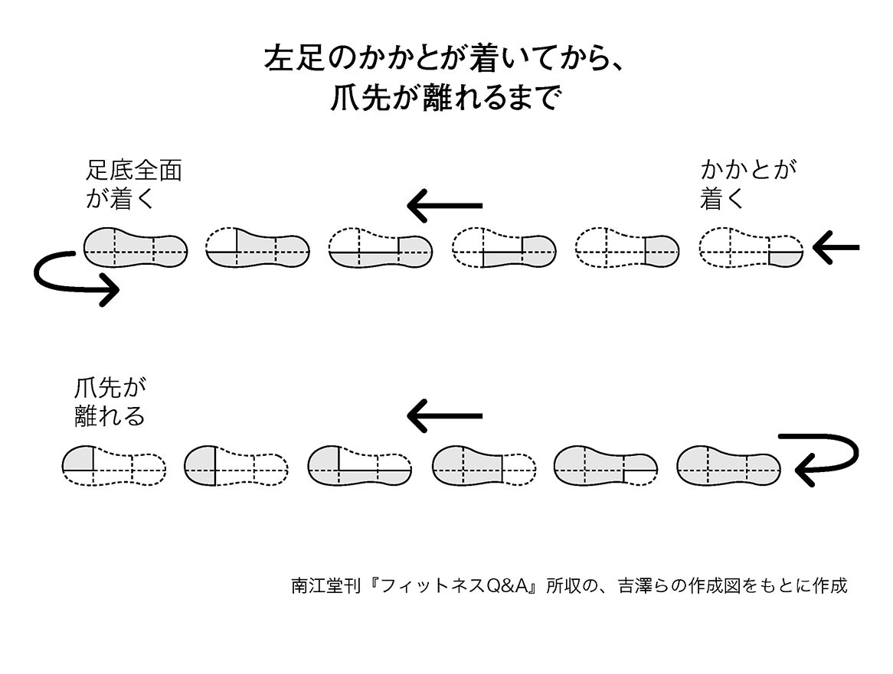
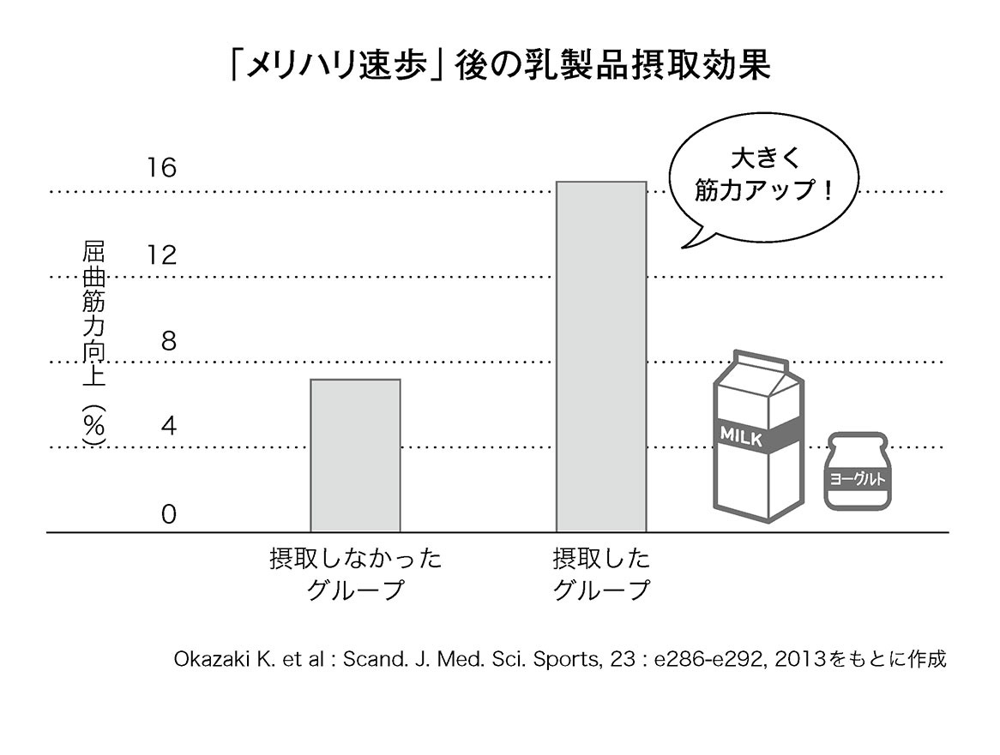
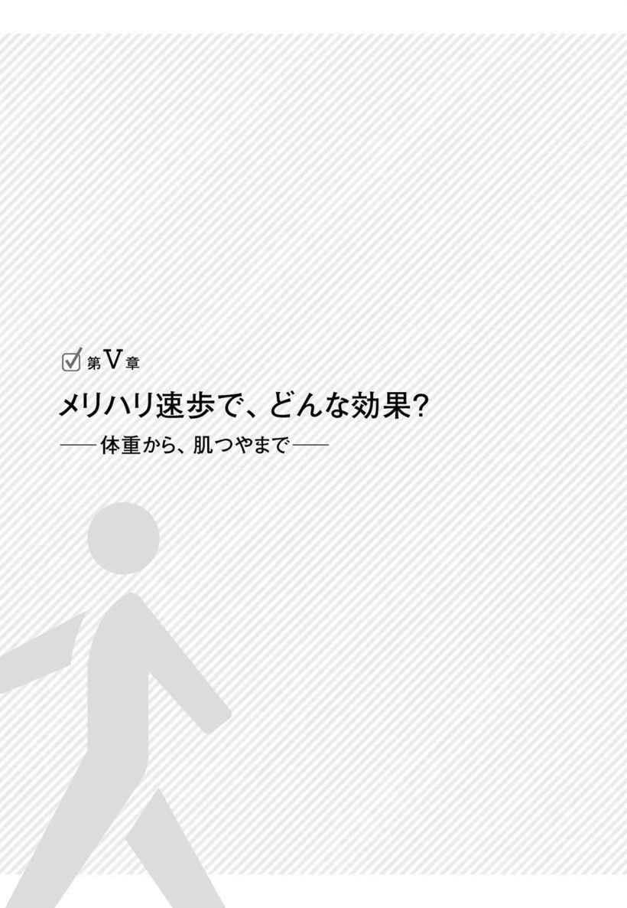
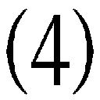

| １００歳まで歩ける腰・ヒザの筋力をつけたいなら「メリハリ速歩」がいい！ | |
| 能勢博 | |
| こう書房 (2016) | |
なぜ「メリハリ速歩」は国内外で注目されているのか～監修にあたって
筆者の細田諒氏には、２００５年『10歳若返る！「インターバル速歩」の秘密』（根本賢一著、能㔟 博監修、こう書房）の出版のときにお世話になりました。細田さんは、その後10年間、この運動方法とその社会的意義に共感していただいた一人で、是非、今度は自分が著者になって本書を出版したい、というお申し出がありました。私たちが開発した「インターバル速歩」が世に広まることは、私の希望するところでもあり快諾しました。私は、主に運動生理学的な記述について、正確さを期するため、若干手を加えさせていただきました。
我が国に限らず、世界の先進国は、高齢化社会に突入し、その対策は喫緊の課題です。そこで、最も期待されているのが「運動」なのです。本書で紹介する「メリハリ速歩」は、正式には「インターバル速歩」として知られているもので、国内ではＮＨＫの「ためしてガッテン」で「（老化を防ぐ）筋トレウォーク」として、国外では、「ニューヨークタイムズ」で「（若さを保つ＝老化に対処するための）最良の運動法の一つ」として紹介され、国の内外から、一躍脚光を浴びるようになりました。その理由は、「誰でも簡単に実施できるトレーニング方法であること」、「効果に関する科学的証拠が整っていること」の２点です。
従来から、効果的な運動トレーニングとして、まず、個人の最大体力を測定し、その70％以上の負荷を１日30分以上、週３日以上実施すると、遅くとも、６ヶ月で体力が10％以上上昇し、それに比例して生活習慣病の症状が改善することが運動処方の国際標準です。
ここでいう体力とは、学術的には最高酸素摂取量と呼ばれるもので、一般に心肺機能と呼ばれています。自動車にたとえるならエンジンの大きさです。６００㏄の軽自動車か、３０００㏄のスポーツカーか、ということでしょうか。オリンピックに出るような方なら大きいエンジンですし、要介護者なら小さいエンジンです。でも、そんなことは問題ではありません。個人の最大体力の一定レベル以上の「強度」の運動を実施するのがポイントなのです。
しかし、この国際標準の運動トレーニングを実施するのはなかなか難しい。まず、それぞれの人が最大体力を測定しなければならないし、さらに運動トレーニング中に、きちんと自分が最大体力の一定レベル以上の運動をやっているか、知らなければなりません。そのためには、トレッドミルや自転車エルゴメータなど、運動強度がわかる「マシン」が揃っている「ジム」に通うことになります。
でも、よく考えてください。ジムを経営するには、マシンの購入、それらを設置しておく施設、そして何よりマシンを使ってきっちり運動指導ができるスタッフを雇用しなければなりません。そのためには、年間会員一人当たり20万円以上の会費を支払わなければ採算が取れないことが明らかになっています。この額は一部の裕福な方には問題ないでしょうが、私たち庶民にとっては到底支払うことができません。
そこで、私たちは、運動処方の国際標準を満たし、かつ誰でもできる運動トレーニングを開発しました。それが本書で紹介されている「メリハリ速歩」なのです。
体力さえあればすばらしい老後があなたを待っています。
本書が、そのきっかけとなれば幸いです。
平成二八年三月
能㔟 博
１００歳まで歩ける腰・ヒザの筋力をつけたいなら
「メリハリ速歩」がいい──もくじ
─予防どころか治った例も─
──もう絶望の寝たきりにも、まだメリハリ速歩が残っていた──
──メリハリ速歩が、世界中で注目される理由──
──日本人が「メリハリ好き」の理由──
──姿勢からペースまで──
──主観オーケー、イージーけっこうだから、みんな向き──
──猫背とそっくり返りに要注意──
──音楽、画像、合理的説明、おまじない......と、方法は多彩──
──手間ひまゼロ・ややこしさもゼロなのに、効果は無限──
──数字などは多くの人向けの、一応の目安──
──七つの基本健康数値をチェック──
──自分向き運動強度の、割り出し方のコツ──
──やらなくてはダメ、やりすぎてもムダが、ストレッチ──
──小さなコツから、大きな工夫まで──
──産まれたてのときは、母乳かミルクだけだった──
──夕方、朝、夜の順だが、それぞれ注意点も──
──週に二日だけのまとめ型より、分散型のほうがベター──
──『いつもとちがう』と感じたら、やめるほうが安全──
──試し歩きでシューズ、ウキウキでウェア──
──ふだんの呼吸法が、ダントツで一番──
──たくさんある、メリハリ速歩の代用品──
──一駅ぶん歩いたり、乗り換え駅で弾んだり──
──ニューヨーク市民に肥満者が少ない理由──
──独立性・社会性にも、メリハリをつけて──
──体重から、肌つやまで──
──今になってから、効果例を紹介する理由──
──「『筋トレ』ウォーキング」とも呼べるメリハリ速歩──
──持久力を表わす最高酸素消費量が、ハッキリ増加──
──血圧から肥満まで、明白な改善傾向──
──足はスマート、肌にも、つやが──
──腰・ヒザもとより、肩や首まで──
──うつ傾向にまでプラスの影響──
──西洋医学の祖ヒポクラテスも気づいていた──
──身体活動を前提につくられているのが人体──
組版・カバーデザイン──北路社
イラスト──なかむら治彦
もうはまだなり、まだはもうなり
──もう絶望の寝たきりにも、まだメリハリ速歩が残っていた──
ロコモという言葉をご存じでしょうか。
これはロコモティブシンドローム（運動器症候群）の略称で、筋肉から骨までの運動器全般が衰え、〝立つ・歩く等を行ないにくくなる症状〟ということです。
二〇〇七年に日本整形外科学会が提唱し、国民生活基礎調査でも「要介護原因のトップはロコモ」との調査結果が発表されました。私たちとしてはぜひ避けたい寝たきりなどの主要原因であり、「悪名高いサルコ（サルコペニアの略称。老人性筋委縮症）は、ロコモへの第一歩」と、恐れられるようになりました。
このサルコになるのにも原因があります。基本的には〝トシをとること、つまり加齢〟ですが、メタボ（メタボリック症候群）などと関係の深い腰重（動くのをおっくうがる身体不活動症候群）が根底にあるのです。
なお、カラダを動かすのを面倒くさがる腰の重い傾向は、以前「運動不足」といわれていましたが、最近は「身体不活動」と呼びます。ＷＨＯ（世界保健機構）が「健康のための身体活動に関する国際勧告」を一〇年に発表し、日本の厚労省などが一三年に作成した「基準」も、以前の「健康づくりのための運動基準」が「身体活動基準」に変わりました。
ラクは苦の種、寝たきりの種
なぜ変更されたのでしょうか？
「運動」というと、「ジョギング」等の本格的なものが想像されがちです。しかし建物で一階分上がるときでも、エレベーターを使うか、階段かで、様子は異なってきますね。
そこで、日常生活のちょっとしたふるまいでも、〝腰が重い〟かどうかが重視されるようになりました。
腰が重い、すなわち不活動の集団を観察していると、高血圧、高血糖、肥満、異常脂質血症などの疾患が雨後のタケノコのように発症します。これを、運動生理学の国際的拠点のひとつであるコペンハーゲン大学の、ベンテ・ペダーセン教授は「不活動症候群（The diseasome of physical inactivity）」と名づけました。
特定保健指導は始まったが......
以上の流れをおおざっぱに表わすと、次のようになります。
腰重→メタボ→サルコ→ロコモ寝たきり
もちろん、これはあくまでおおまかな図式ですが、〝寝たきり老人だらけ〟の危機が急速に進行している現在、この流れは早急に予防しなければなりません。
そこで政府の主導のもと、〇八年四月から、メタボ予防の特定検診と特定保健指導が開始されました。多くの施設などで、いろいろな指導方法が試みられました。
しかし、あまり顕著な効果は見られなかったようです。別に他の試みを批判しているのではありません。事実、長野県松本市で行なわれた中高年者のための健康増進事業「熟年体育大学」（松本市が主催し、信州大学が学術面を担当した産学官民共同事業）でも、一日一万歩のウォーキングでは顕著な体力向上、生活習慣病改善の効果が得られず、一方、自転車エルゴメーターを使ったマシントレーニングではそれらの効果こそ得られたものの、費用面で市全体に普及していくには問題があったのです。
メリハリ速歩の劇的な効果
そこで、信州大学の能㔟博教授らのグループは、試行錯誤をくりかえし、「メリハリ速歩」（正式名、インターバル速歩）という方法にたどり着きました。すなわち、歩行運動で個人の最大体力（最高酸素摂取量）を測定し、その70％以上の強度で速歩をするように「メリハリ速歩」を指導したのです。
最高酸素摂取量と日々のインターバル速歩トレーニング中のエネルギー消費量は、彼らが開発した「熟大メイト（携帯型カロリー計）」を使って記録し、それを参加者にフィードバックし、「メリハリ速歩」の継続を促しました。そして、２００５年～現在まで、５ヶ月間の「メリハリ速歩」の効果に関して、何と６２００人以上のデータベースを構築したのです。その結果、５ヶ月間、「メリハリ速歩」をすれば、最高酸素摂取量、筋力が、それぞれ10～20％向上し、それに比例して、生活習慣病の罹患率が10～20％低下し、医療費が20％削減できることを明らかにしたのです。
「メリハリ速歩」の要介護者への効果検証実験も行なわれています。被験者は、長野県諏訪郡富士見町のデイサービスセンターの紅林荘に通う要介護度１～２度８名（平均年齢82歳）でした。彼らに、まず、熟大メイトを腰に装着してもらい、歩行補助器を装着して室内で最高酸素摂取量を測定しました。そして、その後、最高酸素摂取量の70％に相当する速歩が１日合計11分になるよう、週２日の頻度で、２ヶ月間「メリハリ速歩」をしてもらいました。
その結果、最高酸素摂取量、筋力ともに10％上昇しました。すなわち、10歳若返った体力が得られたのです。そして、研究を担当した理学療法士さんによると認知度が改善して、ずいぶん治療（指導）しやすくなったそうです。
足が出るようになった
そもそも最高酸素摂取量が11％アップなどと、細かい数字を持ち出すまでもありません。地元のテレビ局に、介護保険施設での指導の様子を追ったレポートビデオを見せていただいたのですが、登場したお年寄りたちのうれしそうな表情でのコメントこそ、「メリハリ速歩」のパワーを如実に物語っています。
「ずっと寝たきりでいたけれど、久しぶりに地に足をつけたことで、歩きたいという気になってきたよ」
「最初はね、歩けなくて、だんだんやっているうちに足が出るようになって、今は割合ラクになったね」
そのビデオを見た人が、「メリハリ速歩は高齢化社会に射した一条の光」と、〝感に堪えない〟という口調で断言したので、つられて私も「メリハリ速歩の適用の場は、『介護予防』から『介護治療』へ拡大する可能性が」と思いました。
もうはまだなり、まだはもうなり
もちろん、学会で発表できるような疾患治療に関する厳密な研究はまだ途中のようですから、はっきりとは言えませんが、このとき「もうはまだなり、まだはもうなり」という、投資の世界の格言を思い出してもいました。
『〝もう底値と思っても、まだ下がるかもしれない。まだ下がるはずと考えていても、もう上がり始めるかもしれない〟。だから、「よくよく考う可し」』という格言です。江戸時代の相場の秘伝書『六甲伝』や『八木虎之巻』に出てきます。
たしかに、寝たきりになってしまった人たちにも効いた事実があるのですから、「もうダメだ」とあきらめるのではなく、「まだ治る可能性も」と考えたほうが、一条の光は射してくることでしょう。
滝つぼから這い上がる法
『週刊新潮』一五年二月五日号で、医療ジャーナリストの蒲谷茂氏の記事で、「〔メリハリ速歩などに努めれば〕サルコペニアに抗して『寝たきり』という滝つぼに落ちることは未然に防げます。では、すでに落ちてしまった人を助けることは可能なのでしょうか」という質問に、能㔟教授は次のように答えています。
『家の中で構いませんので、患者さんをしっかり支えてあげながら、ゆっくり歩いて貰いましょう。10メートルも進めるようになれば十分です。１週間も続ければ筋肉がついて、つかまりながら歩けるようになります。あるいは補助が必要ですが、浮力で体を浮かせて歩く、プールの中での運動も効果的です』」
大きな反響を呼んだ、「寝たきりを招く『サルコペニア』にならない最新ガイド」と題する、氏のこの「特別読物」は、次のように締め括られていました。
「〔今後、有効な薬などが出てくるかもしれないが〕それでも、まずは体を動かすことです。滝つぼから這い上がるためにも、そして落ちないためにも」
たとえ寝たきりになってからでも「もうはまだなり」を思い出せば這い上がれる可能性がある現実を、氏は正確に見抜いていたのです。
「終活」前に「老い活」を
──メリハリ速歩が、世界中で注目される理由──
前節では「メリハリ速歩」という言葉を『とっくにご存じのはず』とばかりに、そのまま用いました。けれども初めて聞かれた方も多いでしょうから、まずはポイントを説明しておきます。細かいことはあとでお話ししますので、基本だけでもつかんでおいてください。
サッサカ歩きとユックリ歩きをくり返すだけの方法
何度もいいますが「メリハリ速歩」とは、「インターバル速歩」が正式名で、英語名は「インターバル・ウォーキング・トレーニング」です。そして、その意味は「サッサカ歩きとユックリ歩きを、交互に三分間ずつ五セット続ける運動」ということです。
この「三分間ずつ」とか「五セット」も、基本的な目安です。二分間や三セットでは無効果というわけではありません。現在の研究段階での結論であり、さらに研究や実績が進めば「二分三〇秒ずつ四セットが最も効果的」などと発表する可能性も当然あります。
『それだけ？』と、思われたでしょうか。『かんたんすぎ』と、首をかしげられたかもしれません。
しかし、国外のメジャーなマスコミに紹介され、日本のふつうの週刊誌にまで採りあげられるのは、効果が絶大で信頼できるものだからです。
「老い活」が現代先進諸国の緊要テーマ
では、なぜ『かんたんすぎ』に見える「メリハリ速歩」が、国の内外で注目されているのでしょうか。
根本的には、「高齢化社会の諸問題に、いわゆる先進諸国は直面し」で明らかなように、対〝高齢化〟というテーマへの正面からの方法だからなのです。
まず、中高年者一人ひとりが「加齢」という現実に少しずつでも対応しなければなりません。この〝加齢への対応活動〟を、私は「老い活」と呼んできました。
これはもちろん、就活や婚活という言葉からの思いつきです。就職の困難を克服するためには就活が必要であるように、「腰重→メタボ→サルコ→ロコモ→寝たきり」の流れを克服するためには、「老い活」が必要不可欠、と考えたわけです。
「終活」前に「老い活」を
なお、若い人の「就活」をヒントにしたのは、中高年向け「終活」という言葉を最近よく耳にするようになったからでもあります。
お葬式をどうする、お墓は、家の中の片付けは......という対応活動が「終活」のようです。
しかし、『「終活」などと先走る前に、立つ・歩くの基本動作能力を維持しておかなければ、「終活」自体できないはず』と、考えたのです。
さらに、「アンチ・エイジングなど不自然。老化はそのまま受けとめろ」という内容の、ある人生観想を読み、首をかしげたのも、「老い活」という言葉が浮かんだ理由でした。
『なんだか頭でっかちだなあ。本当の〝歩けない地獄、動けない地獄〟を実感できていないなあ』と思ったのです。「喪って知る親の恩」などと言いますが、似たような感想を述べたくなったわけです。
もちろん寝たきりになっても、『トシなんだから、ガタが来るのは当然』と、平常心を保てる人がいるかもしれません。しかし、支える側の気力・体力を考えてみてください。
介護疲れからの殺人事件というニュースをききますが、これはつまり、自分を支えてくれていた妻や夫や子や子の伴侶などの、〝最もありがたい人〟を殺人犯にしてしまう、ということなのです。
「老い活」は「終活」の前に
もちろん「最も大事な人を殺人犯にしないため」は、極端なたとえです。介護人材や施設の不足にストップをかけたいが財政の現状はきびしいということも、総論でありすぎて、実感は持ちにくいかもしれません。
しかし寝たきりにまでは至っていなかった人が亡くなり、妻や子などが「かたちだけでも」警察から調べられるケースは無数にあるのです。
歩き方がスムーズでない人は、おフロ場で、あるいは何の段差もない和室でも、よくころびがちです。以前なら自分で起き上がったり、助けを求めたのですが、そういうことをパッとはできないレベルになっているため、同居者が気づいたときにはもう手遅れ、というわけです。
家族はあわてて救急車を呼びますし、状況から事故死や自然死はほぼ確実なため、話がオーバーにはなりませんが、万が一というケースを考えて、警察も「第一発見者である妻」などを「かたちだけでも」殺人容疑者あつかいせざるをえません。
事故死にまでは至らなくとも、歩き方がおぼつかないため、手洗いに行くのも間に合わず家族が跡始末をするとか、手をスムーズに伸ばせないため電灯をつけようとしたのに防犯ブザーに触れてしまい、近所の人が駆けつける......といったケースは日常茶飯事です。
もう結論は明らかでしょう。
国家財政のことは総論としか思えなくとも、人生観がどのようなものであっても、老いに克つことを目ざす老い克つ活動・老い活は、終活の前にし始めるべきなのです。そのために役立つ、現在のところ世界中で最も注目されている「老い活」が「メリハリ速歩」なのです。
メリハリ速歩は国民の税金と産官学民協力の果実
──日本人が「メリハリ好き」の理由──
もちろん、このような個人的努力は大切ですが、行政サイドとしても、高齢者の介護施設の拡充などが求められています。しかし一五年六月に「日本創成会議」が発表した「介護人材や施設の不足の現状」は、絶望的とも言えるものでした。この発表に絶句された毛受敏浩氏（公益財団法人・日本国際交流センター執行理事）は、「このままでは日本全体がうば捨て山列島になりかねない」と、新聞で訴えられたほどです。
このように、世界中の（少なくとも先進国の）政府レベルで、「老い活」は緊要テーマとなってきています。
これに対し、能㔟博教授らのグループは、10年以上の歳月を要して、中高年者を対象にインターバル速歩の有効性に関する科学的証拠を蓄積してきました。
その間、Ｈ15‐17経産省『健康サービス産業創出支援事業』、Ｈ17‐19厚労省『長寿科学総合研究』、Ｈ18‐22文科省『特別教育研究経費』など国からの援助で研究が行なわれてきました。能㔟教授によると、これらの研究費の獲得にはずいぶん苦労されたそうです。
今でこそ、誰にでも簡単にできる科学的証拠に裏打ちされた「メリハリ速歩（インターバル速歩）」と注目されていますが、当初は90％の方が「何が新しいのか」わからない人たちだったわけです。ところが、残りの10％が、その新しさ、重要さに気づいてくれて援助の手を差し伸べてくれました。
最初は、当時の信州大学の学長だった森本尚武さんで、「メリハリ速歩を将来性のある研究」と認め、携帯型カロリー計開発の特別予算をつけてくれ、次に、その研究成果を新聞で知った旧三洋電機の源野広和さんが共感して、信州大学と共同で当時公募のあった上記の経産省の「健康サービス産業創出支援事業」に応募することになりました。そして、それが、運よく採択され、松本市で事業のためのインフラの整備を行ない、大人数の市民を対象に、「メリハリ速歩」事業がスタートしました。
これには当時の松本市長だった有賀 正さんの全面的な協力がありました。彼は、当時から松本市を「健康寿命延伸都市」として全国に発信したいと希望されていたのです。
その結果、得られた５ヶ月間の「メリハリ速歩」効果に関する１０００人規模データが得られ、それに基づいて、先に述べた厚労省、文科省の大型研究費を獲得し、ますます事業は発展しました。
その後、これまで事業費の一部を支援していた松本市が、２０１３年度以降、市の財政難を理由に資金援助をすべて打ち切るという難局にも直面しましたが、自分で会費を支払ってでも参加したいという松本市民の熱い支持があって、同市での事業は継続されました。幸運なことに、この難局を聞ききつけた、ある大手企業が、この事業の理念に賛同して援助を申し出てくれて、それが契機となって、この事業は、長野県内はもちろん、全国展開にむけて本格的に動き始めました。まさに、ピンチはチャンスを絵に描いたような出来事だったのです。
このような動きのなか、最近になって「メリハリ速歩」は、長野県庁の健康増進運動（ＡＣＥプロジェクト）に採択され、長野県を代表する運動方法として全国的に売り出そう、という動きまで出ています。ちなみに、ＡＣＥプロジェクトの「Ａ」は action（運動）、「Ｃ」は check （健診）、「Ｅ」は eat 「食」で、長野県の「健康長寿」ブランドを将来的にも維持しようという県民運動です。
マスコミの取材も盛んで、国内ではＮＨＫの「ためしてガッテン」で複数回紹介され、それと並行してメジャーなテレビ番組、新聞、雑誌で紹介され、その数は過去３年間で２００件以上になります。そこで過去３年間の全国の学会、自治体、各種団体での能㔟教授への講演依頼は１００件を超えています、その結果、「メリハリ速歩」の効果に関して６２００人規模にまでデータベース構築を達成し、さらに拡大を続けているのです。
このように、「メリハリ速歩」は、国民の税金による研究結果が基になって事業化されましたが、その事業を取り巻く市民や企業の人たちの支持を得、まさに「草の根運動」として全国に広く浸透しつつあります。今、ここでその成果を利用しない手はありません。
国外での評価
「メリハリ速歩」の研究をすすめる過程で、その成果を国際学会で発表したところ、コペンハーゲン大学のベンテ・ペダーセン教授、メイヨー・クリニックのマイク・ジョイナー教授の目に留まり、インターバル速歩の効果に関する検証実験が実施され、その効果が確認されました。世界有数の医療機関からお墨付きをいただいたわけです。
そのように研究が国際化するなかで、生理学のトップジャーナルである英国生理学会誌の表紙で「未来型運動処方」として紹介されました（〇九年一二月発行の同誌）。
さらに二年後の一一年に『ニューヨークタイムズ・マガジン』は、「唯一最良のエクササイズ（運動法）は？」という特集を組み、バービー（柔軟体操の基礎動作の一つ）など四方法とともに、「メリハリ速歩」もノミネートしました。この記事は、『朝日新聞グローブ』（世界の動向を追う〝朝日新聞の国際的日曜版〟）に、その日本語全訳が載りました（五月一五日付）。
さらに同誌は、四年後の一五年二月にも第二弾を発表しました。ただ論調には変化が見られました。
第一弾には、「最良の運動法を一つだけ選ぶなんて......」という、マクマスター大（カナダ）マーティン・ジバラ教授のコメントが示しているように、効果の比較審判色などありませんでした。「持久力を高める運動の分野で学界をリードする」米国メイヨー・クリニックのマイク・ジョイナー教授の、「メリハリ速歩」こそ「最も優れたエクササイズ」という評価を載せ、マックマスター大のスチュアート・フィリップス教授（運動機能学者）の、「私ならスクワットを勧める」との判定も紹介、という書き方でした。
ところが第二弾は、「メリハリ速歩」だけを『わかりやすく全公開』というタッチに変わっていました。「メリハリ速歩」のいわば〝審査〟を続けている学界の動向だけでなく、一般読者の関心の高さ・問い合わせの多さにも配慮したのでしょう。
『ニューヨークタイムズ・マガジン』は決して専門誌ではなく、朝日新聞や週刊新潮や、脳梗塞まで「メリハリ速歩」で克服した例を大きく報道したＮＨＫなどと同様の、あくまで一般人向けマスコミだからです。そこで同誌は、多くの人の関心の高さに応えようと、第二弾を放ったにちがいありません。
その象徴がタイトルです。第二弾のタイトルは、「メリハリ速歩」の本質を、実にわかりやすく表わしていました。
「ウォーク ハード。ウォーク イージー。リピート（ハードにサッサカ歩け。イージーにユックリ歩け。くり返せ）」
『がんばるだけではダメ。ゆるめるだけでもダメ。途中で一回、歩き方を変えるだけでもダメ。ちょっとサッサカ・ちょっとユックリをくり返せ』という、「メリハリ速歩」の急所を、なんとも的確に突いているではありませんか。このタイトルだけで一般読者はイメージでき、実行する者もさらに増えたことでしょう。
春夏秋冬のある日本だから生まれたメリハリ速歩
ところで私の知人が、「メリハリ好きは、我々日本人の血となり、肉となってるんでしょうねえ」と、言ったことがあります。
その方は別に医学専門でなく、いろいろな分野の取材をしているそうですが、いつだったかの総選挙の際、ある選挙コンサルタントにマイクを向けたところ、「全員が懸命になっていると想像されがちな投票日直前の二週間においてでも、選挙運動には春夏秋冬をつくるべき。山あり谷ありの波をつくり、メリハリをつけなければ当選はおぼつかない」と言われたらしいのです。
私は、この「春夏秋冬をつくるべき」との言葉を聞き、作家・曽野綾子さんのエッセーを思い出し、ハッとしました。
「日本に季節があることが日本人の精神を作って来たのかもしれない、と思うことはよくある」で始まる『春は筍、夏は鮎』と題するそのエッセーには、次のような文章が並んでいたからです。
「シンガポールの人たちは、服装に凝らない。凝らなさ過ぎる。簡単を通り越して、これではファッションが生まれないと思うくらいだ。しかしそれも〔春夏秋冬のある日本と異なり〕年間を通して同じような夏が続く土地だから、可能なのである」（日本商工会議所刊『石垣』〇八年四月号。〔 〕内は筆者の加筆）
「春夏秋冬をつくる」というのは、たしかに日本人の体質でしょう。
飽きっぽさから生まれたメリハリ速歩
だとすれば、海外の人たちとは異なり、効果にわざわざ驚かないほど〝飽きる〟ことをきらうメリハリ志向は、日本人の血となり肉となっているにちがいありません。
考えてみれば、「メリハリ速歩」誕生のきっかけ自体、そもそも熟年体育大学（熟大）事業の参加者の飽きっぽさ・飽きぎらいからでした。
「老い活」として、当時、一日一万歩ウォーキングを指導していた熟大ですが、ある男性が、「オレは歩くだけでは飽きるから、途中で走ってもいいか？」と、スタッフの根本さんに許可を求めたのです。
『まあ、それも一つの方法だろう』とばかり、彼がうなずくと、男性は喜んで〝歩き〟と〝走り〟のくり返しを始めました。すると半年後の測定では、他の参加者とは比較にならないほど、その男性の体力が向上していたのです。
ただし、断っておきますが、能㔟教授は『今から思えば、その方は、体力があって、走らなければ最大体力の70％以上の負荷が体に加わらなかったのでしょう』といわれます。「メリハリ速歩」では、走るのではなく、原則、速歩をすすめているわけです。その理由は、80％以上の中高年者では、速歩で最大体力の70％以上の負荷がかかるからです。
メリハリ速歩の正しい方法
熟年体育大学事業では、現在、年間１５００程度の方々を対象に「メリハリ速歩」の指導を行なっています。一方、雑誌などで知って始めている人たちを含めれば、全国でどれだけの人数になるか見当もつかない状態です。「高齢化社会に射した一条の光。老い活の決定版」と考えればうれしいことではあります。そこで、「メリハリ速歩」の正しい方法を確認してゆきましょう。
ナアナア・主観がとおるメリハリ速歩
──主観オーケー、イージーけっこうだから、みんな向き──
本章では、「メリハリ速歩」の〝安心できる本当の中味・方法〟を全面公開します。
ただ、この公開方法も、メリハリ重視から生まれた〝ナ・カ・ミの姿勢〟であることは頭に入れておいてください。
ナ・カ・ミとは、次のようなものです。
ナ ナアナアを否定しない
カ 〝感じ〟も軽視しない
ミ 実、つまり実際の効果を重視する
教科書ふうではない説明方法
まず、最初のナ、つまりナアナア。
よくいわれるように、日本人にはナアナアの傾向があります。
もちろん、科学的根拠に基づく「メリハリ速歩」にイイ加減な面があってはなりませんが、本書は論文でも教科書でもないので、ポイントだけをまず公開というかたちにしました。
「メリハリ速歩」を行なう前の準備方法、実際の歩き方、行なったあとにやったほうがよいこと、という順番で説明していくのが教科書ですが、本書では〝実際の方法〟をトップに持ってきました。
主観を重視
二番目のカ、つまり〝感じ〟を軽んじない、という点も、「メリハリ速歩」を生んだ日本人の体質を考えた結果です。
私たちはどちらかというと、緻密な数式や論理より、実感や感性を大事にしますね。そのため「主観的」とも批判されがちですが、本書では「主観」も肯定的にあつかっています。
たとえば、疲れたときには休め、などというアドバイスも、脈搏数がいくつになったら、という書き方より、たとえ主観的でも『疲れた』と感じたときには、という説明方法をとりました。
〝就活万全・就職失敗〟ではナンセンス
最後のミ、つまり〝実、実際の効果を重視する〟ことには、最も力を入れて記述しました。
どれだけ立派な就活方法でも、実際の就職に結びつかなければ無意味でしょう。同様に、いかに「メリハリ速歩」という「老い活」を行なっても、サルコやロコモになっては、ましてや寝たきりになってしまっては、ナンセンスです。そこで本書を書いてゆくうえで、〝実の重視〟をずっと念頭に置き続けたのです。
ハードな説明にも注目を
以上が本書の〝ナ・カ・ミの姿勢〟ですが、ここでもメリハリという言葉を思い出してください。
メリハリは〝イージーとハード〟のくり返しでした。イージー一本槍などでもありませんでした。この姿勢こそが効果を生んだのですから、本書のまとめ方も、〝主観オンリー〟ではなく、正確で客観的な説明もはぶかなかったのです。
イージーな説明とハードな説明とをリズミカルに読まれてゆけば、効果も倍増するからです。
立ち方の理想を知っておこう
──猫背とそっくり返りに要注意──
まず最も大切なのは、「メリハリ速歩」を行なう際の最良姿勢「上等姿勢」を自分のものにしておくことです。そのためには「立ち方のチェック」を欠かせません。
なお、「上等姿勢」とは聞きなれない言葉かもしれません。それなのに持ち出したのは、「メリハリ速歩の準備はジャジュジョ」という、おもしろい覚え方があるからです。つまり、ジャッジ（自己判定）、じゅんび体操（準備体操）、じょうとう姿勢（上等姿勢）の三点に気をつければＯＫ、というわけです。まとめてみましょう。
ジャ 自己判定 自分のレベルをつかんでおく
ジュ 準備体操 ストレッチを行ない、カラダをほぐしておく
ジョ 上等姿勢 効果がアップする姿勢を、自分のものにしておく
立ち方でダメなのは、そっくり返りと前かがみ
では、上等姿勢を生む「立ち方のチェック法」とは、どういうものでしょうか。
まず、大きめな鏡の前で、横向きに立ってください。胸がそり、肩にもよけいな力が入っていないでしょうか。
あるいは、まっすぐ立ったつもりなのに、上体が前かがみになっていないでしょうか。
これらは「そっくり返り姿勢（胸張り姿勢）」および「前かがみ姿勢（猫背）」と呼び、マイナス効果しか生みません。気をつけましょう。
姿勢矯正もメリハリで
ただし、ここでも例の「ハード一本槍では問題」を思い出してください。
短い期間でムリヤリ姿勢を正そうとすると、カラダのどこかにしわ寄せが来てしまいます。『自分は下等の立ち方のようだから、まず少しずつ中等をめざしてゆこう』ぐらいの気持で、ハードとイージーのくり返しを行ない続けるほうが、実際の効果は上がります。
覚えやすい〝立ち方三原則〟とは
では、その上等姿勢、すなわち理想的な立ち方とは、どういうものでしょうか。
これは、次の三点にまとめられます。
①背筋がまっすぐ伸びている
②腰が後ろに退けていない
③おなかとお尻に少し力が入っている
この〝立ち方三原則〟は、「福はー内、鬼はー外」ふうの、「せえのお」というかけ声にしておくと、血となり肉となることでしょう。
「せえのお 腰はー引かん、おなかー足す」
漢字で説明するなら、次のようになります。
「背え伸お 腰は退かない、おなか・お尻に力足す」
苦しいダジャレのようですが、ナ・カ・ミのミ、すなわち実際の効果を重んじる「メリハリ速歩」では、音楽まで活用して弾みやリズミカルな動きの誕生に努めています。
「幸福が家の内側に来ることを願い...」では頭を素通りしてしまいますが、「福はー内」にはリズムがあるため、みんなの言葉になっていますね。リズミカルだ・弾みもあるというのは、メリハリがあることの言いかえになるでしょう。
歌の助けで速歩も快調
ある「メリハリ速歩」実践者は「私の速歩のテンポは、細川たかしさんの『浪花節だよ人生は』と合ってるんです。頭の中で、この曲を歌いながら歩くとちょうどよいのです」と語っていました。
もちろんこの例に限りません。たとえば、「メリハリ速歩」の立案者の一人である根本賢一さんたちも論文の中で、「メリハリ速歩」に合っている曲を、次の表のように例示したほどです。
ダジャレであれ何であれ、リズミカル性や弾みを大事にするメリハリ志向は、立ち方三原則などを自然に頭に入れやすく、上等姿勢の獲得も早めるのです。
イラストからもつかめる歩行姿勢
──音楽、画像、合理的説明、おまじない......と、方法は多彩──
「メリハリ速歩」を行なうときの理想の立ち姿勢、上等姿勢を見てゆきましょう。
①歩き始めるときは、当然、前節で紹介した立ち姿勢が理想です。背筋を伸ばし、腰は後ろに退けないようにし、おなかとお尻に適度に力を入れるわけです。
②あごは軽く引き、目線は二五メートル先のやや斜め下を見るようにしましょう。
③上半身は、肩や首の力を抜いて、リラックスしましょう。
④ヒザとつま先は進行方向に向け、がにまたや内股にならないように気をつけましょう。
⑤サッサカ歩きのときの歩幅は、ふだん歩きより大きめにします。男性ならふだんの歩幅プラス五センチメートル、女性ならプラス三センチメートルが目安です。
⑥着地するときは、地面に着くほうの足を伸ばし、つま先を上げましょう。そして、かかとから静かに着地するのです。
⑦蹴るほうの足には、〝指で地面を押すような感覚〟を覚えさせておきましょう。
⑧ヒジは九〇度ぐらいに曲げます。腕は、〝後ろに引く〟ことを意識しながら、前後に大きく振ります。
幼児のヨチヨチ歩きからも学ぼう
このように並べるとややこしそうで、『ナアナアの書き方、おおざっぱな説明......ではない』と、思われたかもしれません。
しかし『歩くとは、まず右足を地面から離して、少し先で着地し、次に左足を......』と思うとむずかしそうでも、ハイハイを卒業するかしないかの幼児でも、ヨチヨチ歩きを行なえていますね。
ここから二つの大事なことがわかります。
一つは、人間の自然な本能の強さです。「説明」など受けないでも、カラダの欲求に従っていれば幼児がヨチヨチ歩きをし始めるように、大人も〝ラクな姿勢をとること〟に素直に従えば、先ほど並べた上等姿勢に自然になってくるのです。つまり、上等姿勢とはラクな姿勢なのです。
第二に、幼児が親や兄姉などの歩く姿を実際に見続け、イメージでつかんでしまっていることも忘れてはなりません。つまり〝画像的・映像的お手本〟があり、それが無意識のうちに幼児に影響を与えているわけです。
だとすれば大人も、「メリハリ速歩」の上等姿勢の図などを何度も見て、イメージでつかんでしまえば、上等姿勢に近づけるでしょう。
先ほど「音楽の活用もリズミカルな歩き方を、より効果的に生んでしまう」と、お話ししました。根本さんたちの論文にあった表も紹介しましたが、あの研究は〝音楽・映像・インタラクション〟研究で高名な長嶋洋一氏の学説に啓発されたようです。
長嶋氏の論文タイトルは、『音楽的ビートが映像的ビートの知覚に及ぼす引き込み効果』というものでした。「ビート」とは、つまり手拍子などの「拍子」ということですから、画像・映像も音楽のように弾みに関わっているのは確か、と言えるのです。
頭での理解にも大きなパワー
もちろん幼児でない私たちは、頭での理解がもたらす効果も大きいものです。
たとえば、立ち姿勢に気をつけたあとは、まず「二五メートル先のやや斜め下を見るように、目線に配慮する」と、先ほど話しました。
この件だけでも、〝なぜ、二五メートル先のやや斜め下を見ればよいのか〟を、頭で理解しておくと、上等姿勢はとりやすくなります。「目線をそのようにすれば、背筋は伸ばせるし、大股で歩くときの〝前方への体重移動〟も、しやすくなるから」と理解しておけば、よいのです。
理想的歩行姿勢である合理的理由
他の件も、主な点だけでも、〝なぜ、よいのか〟を説明しておきましょう。
なぜ歩幅を、いつもより大きめにするのか？
大股だと、お尻から下肢（太もも、など）に至るまでの〝多くの、そして大きな〟筋肉が身体活動に参加できるから、です。
お尻の部分や下肢だけで、その筋肉は全体重の約三分の一を占めています。そのため大股で歩くということは、全身で脂肪などを最大限に燃やす〝手段〟になりうるのです。
なぜ、かかとから着地するのか？
理由の一つは、大股で歩くと、どうしても前へ踏み出した足への体重移動が遅れがちです。そうすると、かかとに過剰な衝撃もかかってしまいます。
そこで、〝かかとから着地〟をしても、体重移動をなるべく早く行なうことを意識するようにし、かつ、クセにしておけばよいわけです。
もう一つの理由は、これをクセにすることで足首を直角に曲げることができ、すね部分の筋肉を鍛えられるから、です。
トシをとると、すねの筋肉はどうしても衰え、つま先は下がり、転倒しがちになります。
ところが、大股で歩き、かかとから着地すると、自然に『つま先は上げよう』と本能が命じることになります。そこで、すねの筋肉は鍛えられますし、転倒の予防にもつながるわけです。

なぜ、腕を直角に曲げ、前後に大きく振るのか？
歩行中の腰の軸が大きく回転しないように、バランスを補うためです。
たとえば、左足を大きく前に踏み出し、右足が後ろに残った、としましょう。
そのときも、左腕を後ろに大きく引き、右腕を大きく前に出せば、バランスがとれます。腰の回転も最小限に抑えられます。つまり、腰に負担をかけることなく、大股で歩けるわけです。
メリハリ姿勢の、おまじない
画像でイメージ、理由から理解......と並べてきましたが、おまじないのパワーも軽視できません。ある熟大卒業生は次のように唱えていました。
メリハリ姿勢のアイウエオ
立ったあと（立ち姿勢をとってから）
目下に命じろ（目線は下に）
アイウエオ
あごを引け
いきむな、力むな
うで（腕）を振り
えぐれ地面を、〝蹴る足〟は
おおまた（大股）堂々忘れずに
かかとを先に、〝着く足〟は
これが全員向きかどうかはわかりません。けれども、その人の姿勢が良く、効果も抜群であったのは事実です。
こんなにカンタン、メリハリ速歩
──手間ひまゼロ・ややこしさもゼロなのに、効果は無限──
では、実際の「メリハリ速歩」の方法をお話しします。
サッサカ歩き・三分間
まず、ややきついと感じるペースで、サッサカ歩きを三分間行なってください。例の「感じ」重視で、数字などより自分の実感にもとづいてよいのです。目安としては、歩いていて息が弾んでくる程度のペースです。
足の踏み出しは、前に話した〝できるだけ大股〟で、着地は〝かかとから〟です。
慣れないうちは、一、二、三とカウントして、三歩目を大きく踏み出すとよいでしょう。リズムがつきます。
ユックリ歩き・三分間
次に、散歩のときのようなペース、つまり、ゆるやかなペースでやはり三分間歩きます。サッサカ歩きで弾んでしまった息を整える調子です。
以上のくり返しを計五回
この「サッサカ歩き→ユックリ歩き」を一セットとして、五セットくり返せばオーケーです。
できれば、週に四回以上行なうとよいでしょう。
手の握り方
なお、サッサカ歩きのときに、手は握らないようにしてください。肩に余計な力が入ってしまうからです。握りたいときでも、あくまで軽やかに
自分のレベルや好みでやろう
──数字などは多くの人向けの、一応の目安──
以上が「メリハリ速歩」のすべてですが、数字は出てきましたし、「感じ」も登場していました。そこで、これらのとりあつかい方を見てゆきましょう。
数字は、こだわらなくてよい〝一応の目安〟
まず、「三分間」とか「五セット」などの数字。
これらについては、ナ・カ・ミのナ、「ナアナアを否定しない」という大原則を思い出してください。
そもそも、挙げた数字自体が、研究の現段階での目安でしかありません。
それに、多数派向けの数字でもあります。
たとえば、五キログラムの石を『重い』と感じる人が一〇人中九人いれば、持ち運び基準は「四キロの石」となります。けれども、残る一人の力持ちには物足りないでしょう。
あるいは逆に、か弱い人が〝残る一人〟の場合、ムリに四キロの石を持ったとしたら、ギックリ腰などになりかねません。
そこで、あくまで〝多数派向けの一応の目安〟と考え、あまりこだわる必要はありません。まさにナアナアの態度でよいのです。
自分のレベルを知っておこう
ただ〝ムリすればギックリ腰〟の件を考えてみても、〝自分がどれぐらいの重さのものを、ふだん持っているか〟は、わかっておく必要があります。
この数字を知らなければ、みんなが四キロの石を持ち上げているのを見て、つられて持とうとして......という悲劇が生まれてしまうからです。
このことは、数字についてだけでなく「感じ」の件に関しても言えます。おフロでは、どの程度の温度の湯を〝熱い〟と感じるかをわかっていないと、大浴場で、みんなにつられて熱めの湯に入り、つらい思いをしてしまうでしょう。
そこで、自分のレベルや好みなどをわきまえておく必要があります。あくまでふだんの状態や、日常生活での習慣にもとづいた〝レベルや好み〟です。
「準備はジャジュジョ」の再確認
ここで、最初にご紹介した「メリハリ速歩の準備はジャジュジョ」を思い出してください。
「メリハリ速歩」を実行する前の準備行動としては、次の三点が重要でした。
ジャ 自己判定 自分のレベルをつかんでおく
ジュ 準備体操 ストレッチを行ない、カラダをほぐしておく
ジョ 上等姿勢 効果がアップする姿勢を、自分のものにしておく
ただ本項では、まずは全体像をつかんでいただこうと、姿勢や実際の方法から公開しました。
「老い活」にムリは厳禁
けれども、ここまで来ると、自己判定の重要性もおわかりでしょう。
若い方なら少々のムリは利き、根性で壁を突破することも必要かもしれません。ですが、「老い活」にムリは禁物です。
「老い活」でムリを通せば、道理も〝寝たきり予防〟の動機も引っ込み、残酷な事態をかえって招き、老いに克つどころか負けてしまうからです。
自分のカラダのことを知っておこう
──七つの基本健康数値をチェック──
では、自己判定とは具体的にどういうことでしょうか。
これは、次の二つにまとめられます。
自分のカラダの基本健康数値を知っておく
自分に合った運動強度を測っておく
七つの基本健康数値
基本健康数値とは、以下の七点を意味します。
①身長
身長は、わざわざ「知っておく」とかまえなくても、とっくにわかっている、と思われたかもしれません。『大人になってから伸びたはずがない』からと。
たしかにそうですが、〝伸びたはず〟はなくても、〝縮んだはず〟と思われるケースはあります。その方の姿勢の悪さなどを目にすると、わかりますね。
体重計にはよく乗って現在の数値を知っていても、『身長計なんて子供用・孫用』などと無視していると、縮んだことに気がつきません。すると、、身長から割り出す〝適正な体重の数値〟を求められなくなる危険性が出てくるのです。
身長も一〇年前に戻った
もっとも四〇代以上の熟大生で、たまに「このトシで背が伸びた」と驚かれる方がいます。
これは測り方のミスなどではありません。「メリハリ速歩」でカラダが軽快になり、姿勢も良くなったため、縮んでいた背丈が若いときのレベルに戻っただけです。
いま思わず「戻った」と書いてしまいましたが、最近よく「バック・エイジング」という言葉も耳にします。テレビでも「美の若返り 激変バックエイジング」と題するバラエティ番組などが目立ちます。
そういう番組がつくられ視聴率をかせいでいるというのは、バックすることへの関心が強烈になってきている証しです。『十代のころに戻りたい』という単なる夢ではなく、『地獄・滝つぼから、少しでも遠ざかりたい』との、真剣な欲求が高まってきた証拠でもあるはずです。「老い活」のテレビ版ですね。
「肌つや一つとっても、メリハリ速歩で一〇歳若返れる」といわれていますが、身長も一〇年前か、それ以上昔にバックできたケースはあるのです。
②体重
これは把握している方が多いでしょうが、増減を気にするのではなく、次に載せた「標準体重」とのズレを重視してください。
「標準体重」とは〝身長とのバランスが最も良い体重〟のことです。これの求め方には、いくつか学説が分かれますが、熟大では上記の計算式を用いています。
ただ、標準体重にだけこだわるのもメリハリ志向に反します。何か一つを、たとえばハードだけをモットーにしないからこそ、効果は驚異的な域に達しているのです。
そこで標準体重に対しても、むやみに気にして他の点は無視・軽視、という態度を決してとってはなりません。
もちろん逆に、標準体重は気にかけず、他の何かだけを問題視するのも厳禁です。
③体脂肪
標準体重以外で気にかけておくべきものは何でしょうか？
その代表格が体脂肪です。体重が標準体重以下でも、体脂肪が多ければメタボ・リスクは高まるからです。判断の目安は次の表を参考にしてください。最近は体脂肪計つきの体重計も普及してきましたから、一日一回の測定を習慣づけるとよいでしょう。
④腹部周囲径
この④以降は〝必ず正確に知っておくべきこと〟ではありません。ただ、軽視しないほうが効果がアップすることは確かです。
さて、そのトップバッターは、「ウエスト周囲径」とも呼ばれる〝おへその下の、胴回りの長さ〟です。この数値で、内臓に脂肪がつきすぎているかどうかが、ハッキリわかるからです。
男性なら八五センチ以上、女性なら九〇センチ以上のときに、「要注意」と警戒してください。
⑤血圧
血圧は〝軽視しないほうがよい〟というより、〝正確に知っておくべきこと〟の一つかもしれません。
では、なぜ五番目に持ってきたかというと、ふだんの数値はもちろん大事ですが、〝「メリハリ速歩」の前後の数値変動〟にこそ、いっそう注意したほうがよいからです。
ふだんから多少高めでも、「メリハリ速歩」実行後に極端な数値変動がなければ、安心して実行し続けられます。そのうち、血圧は〝多少高め〟から改善されます。
しかし、平静時の数値は理想的でも、実行後に大きく変わるようであれば、「メリハリ速歩」のペースなどが当人には不適切、ということです。適切でないペースで実行するなら、事故が起こりかねません。
むろん、いくら「極端な数値変動」はなくとも、「多少高め」でなく「かなり高め」であれば、やはり危険です。次の表を参考にしたり、医師に相談してください。

⑥脈拍
これも、脈拍数自体よりは、平静時とメリハリ速歩後の数値変動度合に注意すべきです。一応目安は次のとおりですが、たとえば男性の場合、『七六回だったから問題だ』と気にするのではなく、『サッサカ歩きを三分間やっただけなのに脈が乱れてきた』ケースのほうを心配すべきなのです。
そのためには、ふだんの自分の数値を知っておかなければなりません。次の目安と比べ、自分の傾向もわきまえておきましょう。
男性 一分間に六五～七五回程度
女性 一分間に七〇～八〇回程度
もちろん、以上は成人──というより中高年用──の目安です。若い方、ましてや未成年の方は、これより多少多くても問題はありません。
⑦血液検査の数値
これは〝できれば知っておいたほうが〟レベルの数値です。
ただ、健康診断などで知る機会があり記録をとっておければ、「メリハリ速歩」の効果を、あとで自分で確かめられます。
この〝日々の成果を目に見えるかたちで残す〟のも、継続欲を高める大事なコツです。
運動強度は〝感じ〟でつかもう
──自分向き運動強度の、割り出し方のコツ──
自分のカラダの基本健康数値をつかんだなら、次に、自分に合った運動強度も知っておきましょう。自分のレベルに合わない運動だと、効果がないばかりか、事故の危険性が生まれるからです。
では、その運動強度は、どのようにして割り出せばよいのでしょうか。
運動強度の割り出し方① 自分の〝感じ〟を信頼する
前に「メリハリ速度は実感・感性を大事にする」とお話ししましたが、割り出し方の①は、まさにこの原則どおりです。
あるいは『私には気分のムラがあるから、〝自分の感じ〟になんてあまり自信を持てないわ』と思われたかもしれません。しかし「気分のムラ」自体、体調と関係している場合が多いのです。だとすれば、身体的には疲労していないはずのときでも、その日の気分から『いつものペースはきつい』と感じたなら、それは体調からの『控えめにしろ』というメッセージかもしれませんね。
特に〝歩く〟ということは究極の〝一人運動〟ですから、当人の〝感じ〟からでしか、『きつい』とか『きつくない』といったペースは割り出せないのです。
急歩＝最高速度での歩行を、まずやってみよう
もちろん割り出し方のコツはあります。
まず、『今の自分には、これが最高速度だ』と感じられる速さで三分間、歩いてみてください。最高速度といっても、「走る」のではなく、あくまで「歩く」のです。場所は、ペースのつかみやすさを考えて選びましょう。等間隔に街路樹や看板がある道路などは最適です。
そして、三分間で何本目の木のところまで来れたかを、チェックします。『一〇本目のところだった』というように、です。
次に、その約七〇％分の距離を、やはり三分間かけて歩きます。先ほどが一〇本目のところであったなら、七本分の距離を歩くわけです。
いまわかりやすいように一〇本目のところを例示しましたが、もちろん、そうそう都合よくはゆかないでしょう。六本目と七本目の中間あたりかもしれません。
そうだとしたら、六・五に〇・七をかけ四・五五という数字を出します。最初が「六本目と七本目の中間あたり」だったのですから、あまり細かく考えず、四本目と五本目の中間あたりまでを三分間かけて歩けばよいのです。ナアナアでけっこうを、決して忘れずに。
急歩時の七割のスピード感覚をつかもう
さて、最初のペースが〝自分にとっての最高速度〟でしたから、それより短い七〇％ぶんの距離を同じ三分間で歩くというのは、それだけゆっくりめということです。けれども、何も考えないで歩いているふだんのペースよりは速いはずです。いつもよりは速く、最高速度でもないこの速歩のペースこそが、サッサカ歩きのときのスピードなのです。
いいかえるなら、このスピードの感覚をだいたいつかめば、「メリハリ速歩」は始められます。
もちろん一回やってみただけでは、つかめないかもしれません。そういうときは、休息時間をたっぷりとったあとに、二回か三回試してみましょう。翌日や翌々日に、同じ場所で試してみても、もちろんけっこうです。
急歩・速歩・平常歩・緩歩のちがい
なお学問的には、歩行ペースを次のように分けます。
急歩 最も速い歩き 一〇〇
速歩 さっさとした歩き 七〇
平常歩 ふだんの歩き 五〇
緩歩 ゆるやかな歩き 四五
一番下の数字は、急歩のペース（速度）を一〇〇とした場合の速度です。そこで七〇％とお話ししてきました。
運動強度の割り出し方② ボルグ指数で見当をつける
これまた実感を大事にした方法です。スウェーデンの運動生理学者ボルグが考案したため、この通称がつきました。「主観的運動強度」とか「自覚的運動強度」と専門的には言いますが、まさに〝きつさ〟などを自分がどのように覚知しているか、という主観を表わした指標なのです。
安静時・限界時以外では、七が最低値で「非常にラク」、一九が最高値で「非常にきつい」と設定されており、一二～一四が「ややきつい」と感じた場合の数値です（日本語表示は小野寺孝一氏ほかが考案。ただ本書では、らくをラク等と改変）。
ところで、いま「ややきつい」を例示したのは、サッサカ歩きのペースは、その人にとって『ややきつい』と感じられるレベルが最も妥当だからです。
具体的にいうなら、バス停に向かっているときバスが来るのが見えたので、あわてて三分間ほど早足で歩く（決して走るのではなく）ペースです。〝少し息は弾み、動悸もする程度〟を想像されてもかまいません。
もっとも三分間ほどなら、このレベルですみますが、このペースを長く続けたときの光景もイメージしておいたほうが、より具体的に「ややきつい」の度合は実感できるでしょう。
サッサカを長く続けた場合の光景
それは次のとおりです。
五分間継続.........胸がどきどきして、息がはずむ。しかし、友人などと歩いていた場合、軽くは会話もできる。
一〇分間継続......少し汗ばむ。
二〇分間継続......すねに軽い痛みを感じ始める。
もちろん以上は、あくまで「自分の感じ」です。しかし、こういうことも把握しておいたほうが効果はアップするし、事故も防げるのです。
運動強度の割り出し方③ 心拍数を測る
これは主観的でなく客観的な方法です。そこで正確な意味を知っておいてください。
◆脈拍数と心拍数は同じ
心臓は循環ポンプとして、収縮と弛緩を繰り返しています。収縮時には血液を大動脈や肺動脈に出し、弛緩時には大静脈や肺静脈から入れるわけです。この働きを行なうための〝心臓の動き〟を心拍動というのですが、〝一分間あたりの心拍動回数〟が心拍数です。
血液が心臓から出て動脈血管を通るときには、当然その圧力で血管も拡張したり収縮したりします。この〝圧力による動脈血管の変化が、手首などでわかるもの〟が脈拍ですから、脈拍数と心拍数は基本的に同じことなのです。
つまり、前節で〝知っておいたほうがよい数値〟の一つに挙げた脈拍数は、自分に合った運動強度をつかむためにも重要なものです。
ボルグ指数も心拍数と関係
そもそもボルグ指数も、心拍数とは密接な関係にあります。
たとえば『ややきつい』と感じる指数の一三を一〇倍すると、そのときの心拍数である一三〇という数値が求められるのです。
というよりボルグは、若者（二〇歳）の心拍数を一〇で割った数値を指数とし、一一だとラクだ、一五だときつく感じる......などと発表したわけです。
実際、追跡実証研究のため、「メリハリ速歩」をやっている若い人に「いま、ボルグ指数でいうなら、どの程度の運動強度？」と、聞き続けたことがあります。すると「一二」と答えた人の、そのときの心拍数は、一二〇前後でした。もちろん専門的には、他の多様な要素も検討しなければなりませんが、とにかく心拍数がどれほど重要なものかは、おわかりいただけたことでしょう。
自分向き正確な運動強度を割り出す計算式
ところで、この心拍数は運動の強度にほぼ比例して高まってゆきます。
しかし、だんだん増加率は落ち着いてしまい、最後にはどれほど運動強度が上がっても、心拍数はまったく変わりません。限界に達したからです。
これを最大心拍数と呼びますが、この数値の求め方は、通常、二二〇から年齢を引けばよいとされています。二〇歳ならば二〇〇、というわけです。
さて、最大心拍数まで持ち出したのは、これが「メリハリ速歩」のときの目標心拍数を計算する場合の大事な数値だからです。
計算式は次に表示したように、最大心拍数から、まずふだんの、つまり自分の安静時の心拍数を引きます。六〇歳なら、二二〇から六〇を引いて、一六〇という最大心拍数をまず出し、安静時の心拍数が七〇ならば、一六〇から七〇をさらに引いて、九〇という数字を出すわけです。
この九〇に〇・六をかけて五四という数字を求め、それに安静時の心拍数、すなわち七〇を足せば、自分の運動強度が正確に出てきます。
ただ、ややこしい方法ですから、ムリして計算する必要はありません。ナアナアと実感で充分です。

効果アップ、事故率ダウン、のストレッチ
──やらなくてはダメ、やりすぎてもムダが、ストレッチ──
自分のレベルをつかんだら、ストレッチを行なう番です。ジャジュジョのジュ、すなわち準備体操をはぶくと危険な場合があるからです。あぶなくなくとも、そもそも「メリハリ速歩」の効果に悪影響を及ぼしてしまいます。
ストレッチの代わりになる大股ブラブラ歩きとは
ただ、ここで例の〝ナアナアで可〟を思い出してください。
きちんとストレッチを行なわなくとも、つまり、その代わりになるものですませても、それなりに効果はあるのです。
それが、三～五分間の大股でのブラブラ歩きです。大股で大きく腕を振って歩き、全身の筋肉を動かし伸ばす方法です。逆にいうなら、これだけは決して欠かさないでください。ただのウォーキングとちがって「メリハリ速歩」には、ハードなとき、すなわちサッサカ歩きのときがあるのですから、カラダにそれなりに負荷はかかります。そこで、まったく準備体操なしで本番に入ると、肉ばなれ・足首などのケガ・ヒザの痛みの発生......などが起こりかねません。
「老い活」で故障が生じ、安静を求められ、それが引き金で寝たきりなど、本末転倒になってしまいます。
最も大事な四つのストレッチ
もっとも準備にばかりエネルギーを費やし、本番時にヘトヘトになったりしても、話は逆さまでしょう。そこで本書では、大事な四つだけをくわしく説明し、その他は軽くふれることにします。
これは最も大事なストレッチです。
①まず足を前後に開きます。このとき、図のように〝立ち姿勢の理想形〟、いわゆる上等姿勢になるように気をつけてください。
②ヒザと足のつま先を、同じ方向に向けます。
③両手は、前に出したほうの足の付け根に添えます。上体を支えるためにです。
④その後、その上体を前へ押し出します。このとき、後ろ足のかかとが地面から離れないように注意しましょう。
⑤前に出した足のヒザをゆっくり曲げます。
⑥後ろ足は、ふくらはぎの部分を伸ばします。
以上が、右足についての（もちろん左足から始めても可）すべてです。そのあと左足も同じように行ないましょう。
どちらについても、一〇～二〇秒ほどかけて、ゆっくり伸ばせば、カラダはほぐれますし、効果もアップします。
◆アキレス腱のストレッチ
これは、ふくらはぎのストレッチとペアになっているもの、と考えたほうがよい方法です。実際の指導でも「ふくらはぎとアキレス腱のストレッチ」と話されることがありますし、かんたんなテキストには、そのように書かれています。ふくらはぎのストレッチの続き、といえる手順だからです。
①ふくらはぎのストレッチを行なったあと、後ろ足を少し前へ移動させます。少しとは、前足との開きを半分ぐらい縮める感じです。
②両手は、足の付け根ではなく、腰に添えるようにします。
③両ヒザを、図の程度に曲げます。
④重心は真下へ落とします。
⑤その後、後ろ足に張りが感じられるようになったときには、今度は伸ばせばよいのです。
なお、伸ばすときに弾み（反動）をつけてはいけません。いきなり伸ばすのでもなく、ゆっくり少しずつ、が大事なコツです。
股関節とは、股のところの関節です。太ももは大腿とも呼ばれます。いずれにしろ、そのあたりのストレッチが、このメニューです。
①まず、肩幅よりも広く、足を開いてください。
②ヒザを曲げます。あくまで、ゆっくりと、です。
③両手はヒザの少し上に、それぞれ添えましょう。
④そのまま、ゆっくり、腰を落としてゆきます。
⑤張りが感じられるところまで来たなら、太ももの内側を伸ばしてゆきましょう。
⑥他のストレッチと同様に、以上も一〇～二〇秒ほど時間をかけて、ゆっくりムリせず行なうのがコツです。
特に『もうトシだ』と思っている方や、高齢でなくとも、身体活動をふだんあまり行なっていない、いわゆる〝腰が重い〟タイプの方は、ムリをしてはいけません。このストレッチは、腰を動かす方法だからです。
◆太もも表側のストレッチ
太ももの表側には、大腿四頭筋と呼ばれる筋肉があります。大腿直筋など四種の筋肉の総称ですが、たとえば大腿直筋は、股関節と膝関節（ヒザの関節）の両方にまたがっており、股関節を曲げ膝関節は伸ばす、という大事な働きをしています。
ですから、それらの筋肉のストレッチは、重要なのです。
①左ヒザを後ろへ折り曲げ、左手で足の甲を、まず持ちます。
②背筋はあくまで伸ばしたまま、左足のかかとをお尻へ引き寄せながら、ゆっくり後ろへ引きます。
③おなかまわりを意識して、腰が反らないように注意します。上体が前に傾かないように、という点も注意しましょう。
④バランスをとるのがむずかしそうなら、椅子などにつかまって行なってもかまいません。
⑤次に、反対側も（左ヒザから始めたなら右ヒザからも）、やはり同じように行ないます。
その他のストレッチ
では次に、その他のストレッチもご紹介しておきましょう。
ただ、すべてを懸命に行なう必要などありません。下半身を中心に、自分ができそうなものを行なうだけでけっこうです。
◆腕・肩・背中上部のストレッチ
①足を、まず肩幅に開きます。頭の上で両手を組みます。
②次に、てのひらを上に向け、腕を少し後ろに倒します。
◆肩・背中上部のストレッチ
①これも、足をまず肩幅に開きます。そして、腕を胸の前で曲げます。
②次に、その腕を反対の肩のほうへ、ゆっくり引っ張ります。ヒジに手を添えながらです。
反対側も、同じように行なってください。
◆体側のストレッチ
①足を肩幅に開いたあと、右手で左手の手首を握ります。
②両手を頭の上に上げます。
③そのあと、頭の上から下のほうへ引っ張りながら、カラダをゆっくり右側に曲げます。ここから「体側（カラダの側面）のストレッチ」という名前が生まれました。
④次に、反対側も同じように行なってください。
◆胸・肩のストレッチ
①やはり足を肩幅に開き、両手を背中の後ろで組みます。
②胸を張りましょう。
③余裕があれば、腕を少し上へ押し上げてみてください。
④あごを軽く引けば、さらに効果的です。
ただ、②の胸を張るとき、力むのは厳禁です。また、④のあごを引く際も、軽くでけっこうです。
◆背中のストレッチ
①足を肩幅に開いたあと、まずヒザを軽く曲げます。
②次に、背中を丸め、胸の前で両手を組みましょう。つまり、大きなボールを抱えるような姿勢をとるわけです。
③そして、組んだ両手を前のほうに引っ張ってください。
◆股関節と肩と腰のストレッチ
①まず「股関節と太もも内側のストレッチ」を行ないます。
②次に、左肩を前に押し出しましょう。
③その後、左手で左ヒザを内側から外側へ押し出すようにしながら、上体を右側へひねればＯＫです。
④なお、いったん上体を起こしてリラックスしたあと、反対側も同じように行ないましょう。その場合、「リラックスしたあと」というのがキーポイントです。
◆太もも裏側のストレッチ
①まず「ふくらはぎのストレッチ」を行ないます。
②その後、上体を起こして、足は前後に開きましょう。そのとき両手は、足の付け根に添えます。
③次に、カラダが〝く〟の字型になるよう、お尻を後ろへ突き出します。なお、前足のヒザは曲げないよう注意してください。
④反対側についても、①から順に、再び行ないます。
◆すねのストレッチ
①両手を腰に添え、左足を後ろに引き、つま先を立てます。
②腰を軽く曲げながら、前へ倒しましょう。
③その後、すねに張りが感じられたとき、曲げていた腰を伸ばします。
④反対側も、同じように行なってください。
なお、ジムなどでいわれる「前脛骨筋」とは、この「すね」のことです。
現状レベルの維持は確実で、成長の可能性も
以上で、主なストレッチはすべて紹介し終えました。
あるいは、種類が多すぎ、と思われたかもしれません。けれども最初にお話ししたように、「その他のストレッチ」は必ず行なうべきものではありません。
では、なぜ、わざわざご紹介したのか？
「最初はできなかったストレッチが、メリハリ速歩を続けるうち、できるようになってきた」という喜びの声をよく聞くからです。つまり、一度チャレンジしてできなかったメニューを、一～二ヶ月後に再挑戦してみたところ『できるカラダになっていた』という〝喜びの瞬間〟を提供したかったためなのです。
この喜びは、好循環を生み、「メリハリ速歩」をさらに続けたくさせます。「メリハリ速歩」を続ければ、さらに変身が可能になります。つまり、若いときは成長を望んでも、中高年になると『これ以上、ガタを来させまい』という、現状維持の気分になりがちですが、「メリハリ速歩」には成長をもたらす可能性があるのです。この可能性が、〝最悪でも維持だけは確実〟につながっているわけです。
プラス牛乳一杯で、効果は倍増?!
──産まれたてのときは、母乳かミルクだけだった──
前章で、「メリハリ速歩」の基本はすべて公開しました。本章では、よく寄せられる疑問の声や質問などに、お答えします。
メリハリ速歩オンリーで可か？
まず第一は、『メリハリ速歩がそれほどすばらしいものならば、他のことは気にしなくていいんですね？』という質問です。よくナントカ健康法の提唱者は「これを実行しさえすれば」と力説しがちですが、そういうものの一つと思うのでしょう。
しかし「メリハリ速歩」は、そういう発想自体の疑問視や否定から生まれたものです。どれほど信頼できる方法でも、それ一本槍ではダメという考え方こそ、メリハリの発想法だからです。
別に健康法に限らず子供の教育法でも、「つめこみばかりや、ゆとりばかりではダメだ。メリハリをつけろ。よく学び、よく遊べ、だ」といいますね。あれと同じことです。
栄養軽視のダイエットは悲喜劇の元
では、「メリハリ速歩」以外で〝気をつけたほうが「老い活」に良い〟ものは何でしょうか？
当然ながら栄養です。前に「メリハリ速歩は世界中で注目されている。特に、いわゆる先進国で」と話しましたが、たしかに、いわゆる発展途上国の専門家はそれほど関心を示しません。
『栄養不足で平均寿命が短いから、まず高齢化社会の問題に悩むレベルにまで行きたいんだ』というところなのでしょう。
ところが、メタボなどを案じるあまりダイエットに真剣になりすぎると、発展途上国の一部の人たちとカラダが似てくるのです。飢に苦しみ悩んでいる人たちからすれば、『なんとも、ふざけた話』というところでしょう。
乳製品は重要食品のトップ
では、どういう食品を特にとるべきでしょうか？
当然ながら満遍なく、です。Ａがカラダに良いと聞いても、また、その説が医学的に根拠のある妥当なものでも、Ａ一本槍ではダメなのと同じです。
もちろん、満遍なくといっても、大切な食品とそれほどでもない食品という差はあります。そのなかで乳製品は大切な食品のトップに位置しています。
先ほど、発展途上国に触れましたが、日本でも高度経済成長が始まるまでは栄養不足で悩んでいる人たちが多数いました。そこで、学校給食に乳製品を導入したり、製品の品質向上が図られ、身長・体重はもとより、寿命まで大きく変わったわけです。
だとしたなら、乳製品だけではもちろんダメですが、「メリハリ速歩」とともにそちらの摂取にも努めなければなりません。そもそも相乗効果が働いて、「メリハリ速歩」自体にもプラスの影響を与えるからです。
牛乳一杯の効果
たとえば、次のグラフを見てください。

被験者は、介入前に「メリハリ速歩」をすでに六ヶ月間以上実行し、筋力の増加がプラトーに達している中高年女性三五人です。
それらの被験者を日々の「メリハリ速歩」の直後に牛乳を飲む群（17名）と飲まない群（18名）の２群にわけ、さらに５ヶ月間「メリハリ速歩」を実施してもらいました。すると５ヵ月後に、牛乳を飲んだ群で飲まなかった群に比べ、太ももの屈曲筋力がより増加したのです。
さらに、六〇代の男性一四人に、自転車こぎという〝ややきつい運動〟を八週間続けてもらいました。
その結果、次のグラフのように、乳製品を摂取しないグループは、体内の血液量がほとんど増えなかったのに、摂取グループは一六〇ミリリットルも増加していたのです。またこの血液量の増加に比例して、皮膚の血流量や発汗能が改善していました。「メリハリ速歩」プラス30分以内の乳製品摂取は熱中症をも予防する可能性を示唆する結果を得たのです。
高齢の被災者に提案したことは、一般の中高年にも実行してもらいたいこと
そこで、東日本大震災のあと、仮設住宅暮らしを余儀なくされている高齢の方々に、仙台でのシンポジウムで能㔟教授は、次のような提案をしました。
「朝、決まった時間にみんなで集まってメリハリ速歩をし、その後、牛乳を飲みながら語り合う。それから、帰路、出席しなかった方の家に寄り、様子をうかがう、というのを実践してみませんか」
もちろん仮設住宅で暮らしている被災者に、心拍数を正確に計算する余裕などないでしょう。
けれども、だいたい三分間サッサカ歩き、その後、散歩をまたユックリ三分間ほど行ない......を五回ぐらいくり返し、最後に牛乳やヨーグルトなどをカラダに入れると、体力はアップしますし、気分も快くなります。
メリハリ速歩に最適の時間帯は？
──夕方、朝、夜の順だが、それぞれ注意点も──
前節で、能㔟教授が被災者の方々に「朝、決まった時間にメリハリ速歩を」と提案したことを書きました。あのとき話を「朝......」で始めたのは、「いつ行なうのが最も良いのか」と、よく質問されるからだそうです。「いつでもいいのか」と、よく訊かれるからと語っていました。そこで、説明しておきましょう。
メリハリ速歩の実施時間帯は？
運動生理学の教科書にみる〝答え〟は、「午後の遅くに」、つまり「夕方に」です。さらに厳密な〝正解〟は、「午後四時前後に」です。というのも、そのころまでに身体活動は充分してきており、カラダはほぐれていますし、温まってもいるからです。
ただ、そのころは仕事中や夕食の準備中である場合が多く、なかなか定期的には実行しにくいでしょう。そこで〝次善の策〟としては、「朝の起床後に」がおすすめです。なぜなら体内時計をリセットすることになるし、寝ていたときの低体温状態を一気に正常化できるし、電話その他の〝他からの妨害要因〟がまだあまりない自由時間なので、自分のペースを保てるためです。
ただ、朝はカラダがほぐれていませんから、ストレッチは省かないようにしてください。
もちろん、朝や夕方がムリな場合、夜に行なってもかまいません。しかしカラダが興奮することは、忘れないようにしておきましょう。
「メリハリ速歩」にはイージーだけでなくハードな面もあるため、カラダの興奮で寝つきが悪くなったり、眠れなくなるケースも見られるからです。
朝・夕方に分けてもオーケーか？
──週に二日だけのまとめ型より、分散型のほうがベター──
「朝だけとか夕方だけではなく、少しずつ分けてやってもいいか」という質問も、よく寄せられます。
〝一週間に計一二〇分以上〟だけが基本
答えは「かまわない。オーケー」です。
「メリハリ速歩」の基本的な目安として、〝サッサカ歩きを三分間、ユックリ歩きも三分間〟を一セットとして、五セットくり返せばよい、と話してきました。「できれば週に四日以上」とも付け加えました。
この数字を足してゆくと、一セットが六分間、そこで五セットでは三〇分間となります。四日間では一二〇分間ですから、週に一二〇分間が目安になるわけです。
能㔟教授らのグループの研究では、この「一週間に合計一二〇分間以上」のケースが最も効果的、という結論しか出ていません。一日に五セットを四日でも、一日に四セットを五日でも、大差はないのです。
そこで、朝に二セット、昼に一セット、夜に二セットというスタイルで、週に四日でもかまいません。
逆に、平日がどうしてもムリなら、土曜日と日曜日に一〇セットずつでもよいでしょう。もちろん、自分の〝感じ〟で、きつくなければ、です。
ただまとめすぎると、『一時間もやるのは、おっくうだなあ』と、事前に思ってしまう危険性がありますから、むしろ〝一日に四セットを週に五日〟などの分散型のほうが続けやすい、とはいえますね。カラダにクセもつけやすいからです。

やっていけないのは、どんなとき？
──『いつもとちがう』と感じたら、やめるほうが安全──
前頁で、『おっくうだなあ』と事前に思ってしまう危険性にふれました。面倒くささが全くないために続けやすく、そのため効果も驚異的、というのが「メリハリ速歩」のキーポイントだったのですから、投げ出したくなる〝まとめすぎ〟は本末転倒です。
ただ『おっくうだなあ』と思ったとき、時間が長すぎるからか、体調のせいかは、必ず考えてみましょう。もし、一回に一〇セット（六〇分間）がウンザリの原因のようなら、やはり〝何日間かかけて少しずつ〟のスタイルに変えましょう。しかし、おっくうに感じたのがカラダからのメッセージ、というケースもあるのです。その場合、根性から強行するのは危険です。
要注意のケース
では、事前であれ実行中であれ、どのようなときに中止すべきでしょうか。
①足やヒザに痛み 「メリハリ速歩」中に足やヒザに、いつもとはちがった痛みを覚えたなら、支障が出てきたサインです。すぐ中止し、帰宅して様子を見ましょう。
②頭痛 いつもと異なる頭痛を感じたときは、軽度であっても、いったんやめてみましょう。そうしてふつうに続けられそうなら再開してもかまいませんが、ムリをするのは厳禁です。
③二日酔い アルコール分が残っているときに「メリハリ速歩」を行なうのは、かなり危険です。吐き気をもよおす恐れがありますし、実際に戻してしまうケースも考えられるからです。
④徹夜明け 徹夜をしたとか、気がかりなことがあって朝方まで眠れなかった、というときも注意すべきでしょう。仮に『どうということもない』と感じられるのであれば始めてけっこうですが、途中での体調変化には充分気をつけるべきです。
⑤脈拍の異常 仮に正確に測れなくとも、いつもより速く感じられたらムリすべきではありません。
⑥血圧の異常 できれば始める前に測ってみましょう。いつもの数値と大差があるときには中止してください。特に最高血圧──いわゆる「上」の血圧──が一六〇以上のときは、始めるのは厳禁です。ただ、そういうときには、体調自体がすぐれないはずです。そういう〝感じ〟や〝カン〟には大いに頼りましょう。
⑦心臓のドキドキ 多くの人の前でスピーチなどという特別の状況ではないのに、そういうときと同じように心臓の鼓動が乱れてきたなら、カラダからの何らかのメッセージです。必ず様子を見て、ムリはしないように
⑧冷や汗 途中で冷や汗が出てきたり、急に寒けがするのは、発熱のサインです。すぐ中止し、帰宅しましょう。
⑨めまい たとえ軽度でも中止しましょう。病気の予兆というケースがあるからです。『少しペースを落として』などと考えて続けると、より激しいめまいが起きてしまうこともあるのです。
⑩胸がしめつけられる感じ これは、まさに〝感じ〟であり、精密検査でも受けない限り、原因はわからないかもしれません。しかし、くり返しますが〝感じ〟は大事なのですから、ムリするのはやめましょう。
病後の注意点
主なケースをピックアップしましたが、カゼ気味、ゲリ気味など何か気になることがある場合も、以上に準じて判断してください。
ところで、いま、カゼなどを例に出したのは、そういう病気にかかったあとのことも頭に入れておいてほしいからです。
いままでカンに頼って行動を、と話してきましたが、何かの病気にかかったあと熱が下がったり、痛みが消えたりすると、『治った』というカンを働かせてしまう危険性があります。
そこで、その病気を診てもらっている医師に、「こういう運動は？」と相談してみましょう。
グッズ選びのチェックポイントは？
──試し歩きでシューズ、ウキウキでウェア──
シューズやウェアなどのグッズについても、「どういうものが最適か？」とよく質問されます。そこで、大事なことだけをお答えしましょう。
シューズ選びのチェックポイント
まずシューズについてですが、次の点を考えて選んでください。
①かかと部分にクッション性があるか？
これは当然でしょう。かかとから着地するわけですから、クッション性に乏しければ、ガクッガクッと、着地のたびに停止状態が生まれてしまいます。
②通気性にすぐれているか？
歩いてゆくうちにムレてくると、意欲は低下しがちです。足自体にも悪影響を与えます。そこでジョギング用の高級品には、自分で空気を入れて調整できるタイプまで現われました。しかし「メリハリ速歩」は走るのでなく、名前のとおり歩くだけなのですから、それほど神経質になる必要はありません。
通気性・吸湿性についても、例のナアナア感覚でとらえてください。
③靴底は曲がりやすいか？
この点は、市街地などの、路面が一応整備されている場所で大事なことです。曲がりにくいと、大股で歩きにくいからです。
④サイズは合っているか？
サイズについては当然きつすぎず、ゆるすぎないものを選びましょう。
目安としては「かかと部分に指が一本入る程度」を覚えておいてください。
ウキウキ・ウェアとは？
ウェアについては、「ウキウキ」というキーワードを覚えておいてください。
ウ 動きやすい
キ 吸湿性に富んでいる
ウ うっとうしくない。つまり、通気性がある
キ 季節に合っている
最初の「動きやすい」は、もちろん「歩きやすい」ということです。どれほど高品質のスポーツウェアでも、自分にとって『最初は、それほど思わなかったが、「メリハリ速歩」を続けてみると、けっこうきゅうくつなウェアだなあ』と感じ始めるものでは問題でしょう。
吸湿性も、歩くと汗をかくのですから大事な条件です。ポリエステルなどの化学繊維が入っている、速乾性のあるドライタイプがよいでしょう。
通気性も、同じ意味で注意しなければなりません。
夏なら、ドライタイプのＴシャツにジャージなど、冬なら、Ｔシャツにトレーナーにウインドブレーカー......というような〝合季節性〟も大切です。
なにしろ、ここは春夏秋冬のある日本だからです。
メリハリ速歩向きの呼吸法は？
──ふだんの呼吸法が、ダントツで一番──
グッズほどではありませんが、呼吸法についての質問も多いものです。ある体操道場では、「気」という言葉を用いて「生命の根源」うんぬんの講義が続くので、「呼吸法」に神経質になってしまった、という熟大生もいました。
では、最良の呼吸法はあるのでしょうか？
自分に合った呼吸法がベスト
答えは「どんな呼吸法でもかまいません」です。自然にまかせて、ふつうに呼吸しながら歩けばよいのです。「自分に合った、ふだん何の意識もしないで行なっている方法」こそが、「メリハリ速歩」の効果を高めるからです。
逆にいうなら、一定のリズムやルールのある呼吸法が身についている場合、それを通せばよいでしょう。ムリして〝ふつうの多くの人の方法〟に変えよう、などと意識すると、これまた不自然になってしまうからです。
通勤時メリハリ速歩のアイデア集
──一駅ぶん歩いたり、乗り換え駅で弾んだり──
シューズなど、よく訊かれることについて、お答えしてきました。
ここでは、〝最も多くて大事な質問〟を、章を新たにして、とりあげましょう。
まず、長野県松本市から東京へ引っ越されたＡ氏の、次のお手紙をご紹介します。
メリハリ速歩の代わりになるものは？
「...前略...（転勤で）こういう（引っ越す）ことになったため、超多忙で、いきいき健康ひろば（松本市内に二七ヶ所ある、熟大の拠点）に通っていた頃のようには、インターバル速歩を行なえません。そのせいでしょうか、体調も何か変であります。
もっとも超多忙と申しましても、通勤時などには当然普通に歩いておりますし、地理不案内のため遠回りしてしまうことも多く、万歩計の歩数は松本にいた頃より多いくらいです。...中略...
こうして悩んでいて、ふと熟年体育大学で『三～五分間の、大股でのブラブラ歩きはストレッチの代わりになりうる』と、お教えいただいたことを思い出しました。『ではインターバル速歩の代わりになりうる方法、すなわち〝準インターバル速歩〟とでも呼ぶべきものはないのであろうか』と、思い至ったのです...後略...」
たいそう長くて、ていねいな問い合わせだったのですが、つまりは『少々効果は小さくなってかまわないから、準メリハリ速歩＝メリハリ速歩の代用品を教えてくれ』ということでした。この種の質問はしょっちゅう寄せられるそうです。
そこで章を新たにして〝準メリハリのヒント集〟を述べていきます。
通勤時メリハリ速歩の効果
あらたまったかたちでない「メリハリ速歩」で、最も実行しやすいのは「通勤時メリハリ速歩」でしょう。たとえば、ＩＴ関連会社勤務の玉村麻衣子さんは、通勤のため歩かなければならない時間を、「メリハリ速歩」に充てました。「想像以上」の効果に驚かれ、周囲の評判にもなり、女性誌でとりあげられたほどです（小学館刊の『アネキャン』一三年九月号）。
同誌で玉村さんは、次のようにコメントしていました。
「毎日の歩いている時間を、運動に変えることができるのはスゴイ♥ 続けるうちに疲れにくくなったように感じるし、このリズム感のある歩き方はハマリますよ」
「ただウォーキングするよりも体がポカポカしてくるのが早い。想像以上に体へ効いていることを実感」
なお玉村さんは、「メリハリ速歩」後に二〇〇の「明治スポーツミルク」も飲まれているようでした。記事にくわしい説明こそありませんでしたが、イラストにその牛乳が登場していたからです。
通勤時メリハリ速歩のアイデア集
「通勤時メリハリ速歩」の例は数が多いだけでなく、やり方もさまざまです。
自宅から会社までの約二キロメートルを、「メリハリ速歩」で出勤し続けている三五歳の男性がいるかと思えば、一駅手前で降りて（あるいはバス停についても同じようなことをして）会社まで毎日実行の六〇代の女性もいます。
多いのは〝出社時だけ〟というケースですが、気にすることはありません。ムリなルールを決めて三日坊主で終わるより、少々イイ加減でも続けるほうが効果があるし、カラダ自身が実行を欲するようになるからです。
たとえば、先ほど三五歳の男性の例を出しましたが、太田和義さんというその方は、「英会話のレッスンと同じで、いざ始めて慣れてしまうと毎日続けないと気持ち悪く感じる」という手記を寄せてくれたそうです。
一つ手前の駅で下車より、一つ先の駅から乗車
ただ、自宅から会社までずっとでなく、電車やバスの利用距離を減らして実行する場合、注意点があります。「一つ手前の駅で降りる」より、「一つ先の駅から乗る」というほうが続きやすいのです。電車に乗ってしまうと、『他の客をかきわけてまでムリすることはないかなあ』と思ったり、気がつかないうちに居眠りをしていて......ということになるからです。
なお、都会の大きな駅などでは、乗り換えるとき、かなり歩かなければならない場合があります。これをチャンスにしていた例もありました。
歩行すべてにメリハリを
──ニューヨーク市民に肥満者が少ない理由──
ある意味で自己流の準メリハリは、「通勤時メリハリ速歩」に限りません。現役のビジネスマンからリタイアされた方にまで、チャンスは無数にころがっています。
待ち合わせ場所でボーッと立っているより......
たとえば取引先のＡ氏と、Ｂ駅改札口で待ち合わせの約束をした、としましょう。たまたま早く着きすぎた場合、ジリジリしながらボーッと立っていることはありません。仮に五分間早かったなら、腕時計を見ながら二分間サッサカ、改札口を離れて歩けばよいのです。そうして、また改札口に向かって、今度はユックリ歩きます。
心拍数も何も関係のない、自己流の「メリハリ速歩」ですが、ボーッと相手を待ち続けるよりは、身体活動を行なうこととなり、あの忌まわしい〝寝たきりへの流れ〟に、少しでも抵抗することができるわけです。
あるいは、『事情が許せばわざと早く着いて、駅近くでの「メリハリ速歩」用の時間にすることもできるのでは』と思われたかもしれません。
そのとおりです。『約束は二時だから、あせることないなあ』と、だらだら駅に向かうのではなく、ある意味ではせっかちに行動して、仕事中でも自分だけの時間をつくればよいのです。
ニューヨーカーが肥満でない理由
これは、時間をムダにしないでガンバレ、という説教ではありません。だらだらする時間、イージーな時間を持つためにも、がんばる時間、つまりハードな時間を持ったほうがよいのです。
この想いは、先に述べた『朝日新聞グローブ』の記事を読んで、あらためて強まりました。
第Ⅰ章でご紹介したように、『ニューヨークタイムズ・マガジン』で、グレッチェン・レイノルズ氏が「メリハリ速歩」を「唯一最良のエクササイズ」の候補の一つにノミネートしたため、『朝日新聞グローブ』は、レイノルズ氏の文章を載せました。記者・後藤絵里さんの日本語訳です。
同じ紙面に、ニューヨーク在住のジャーナリスト津山恵子女史による、批評コーナーも設けられていました。その批評には、次の一節がありました。
「これ〔メリハリ速歩〕は実際に多くのニューヨーカーが気がつかないうちに実行している。
たとえば買い物で、チーズ屋、パン屋、スーパーと回る際、歩道はせかせか歩く。信号が赤でもさっさと渡り、文字通りの速歩。でも店内ではゆっくりと呼吸を整える。だから、ニューヨーカーの肥満率は米国全体に比べかなり低いのかもしれない」
開店や開場の時刻までジーッと待つより......
信号無視まではしなくとも、待ち合わせ場所までせっかちな態度で向かい、五分間でも一〇分間でも余裕を持てたなら、一セットでも「メリハリ速歩」を行なえます。運動をするために、朝早く起きて......などとかまえることなく、できるのです。
また、買い物の例で明らかなように、仕事中などでない時間でも、準メリハリは行なえます。
たとえば、開店時刻や開場時刻が一〇時だと思っていたので来てみたら、一〇時半だった、などという体験をしたことがありませんか。そういうとき、並んだほうがよいケースでは、もちろんジーッと待つほかありません。しかし自分が何番目の客かなどどうでもよいケースでは、『カンちがいしていた』とイライラするのではなく、『メリハリ速歩をするチャンスだ』と喜びましょう。店や会場の近くを、一セットでも二セットでも「メリハリ速歩」してまわればよいわけです。
〝歩き〟すべてにメリハリをつければクセに
以上のことを少し極端にまとめるなら、〝歩く〟という行動をすべて準メリハリにしてしまえばよい、となります。だらだらだけでなく、せっかちだけでもなく、歩き方に自己流でもメリハリをつけるなら、「準メリハリ速歩」には確実になるからです。
〝群れて群れぬ〟をクセにしよう
──独立性・社会性にも、メリハリをつけて──
さて、今まで「仕事中でも自分だけの時間をつくればよい」とか、「〝歩く〟とは究極の〝一人運動〟だから、自分に合ったペースで」と、お話ししてきました。
実際、「夫婦で続けていますが、平日のおやつの時間にお茶を飲んだあと、夫は犬といっしょに、私は一人で出かけます。お互いに歩く速度がちがうので夫婦いっしょには歩けないんですよ」（七一歳の、矢野一代さん）というような話はよく聞きます。
「夫婦で（メリハリ速歩を）続けています」が、「（ふつうの散歩とはちがって）夫婦いっしょには歩けない」。
実はここに「メリハリ速歩」の大事な点があります。
夫婦で行なったから続いた、夫婦でもペースは別にした
どういうことでしょうか？
自分のペースで歩かなければ「メリハリ速歩」の意味がありませんから──無効果どころか危険な場合さえありますから──夫婦でもいっしょには歩けません。
けれども矢野さんが続けてこれたのは、『一人だけの行動ではなく夫婦二人でやってきたから』という面もあるのではないでしょうか？
矢野さんが歩きたくともご主人が冷ややかに見ていたなら、やる気をなくしたかもしれないですね。
あるいは逆に『今日はちょっとおっくうだなあ』と思っても、ご主人が用意をし始めたならつられるでしょう。
つまり〝一人運動性の重視〟一本槍でも、その逆でもないから、続けられたし、効果も倍増したのです。一本槍、単調ではダメなわけです。
立って二本足で歩行の人間には、独立欲と群行欲の遺伝子
このご夫婦の例のようなことを私は、「独りでしっかり立ちたい」独立性と、「群れたい」社会性との両面に対してもメリハリをつけるべき、と話してきました。
話が少し雄大になりますが、そもそも人が人たる所以は、立って二本足で歩き出したところに始まります。約五〇〇万年前のことです。ところが四つ足動物は心臓が他の臓器より下にあるため、放っておいても血液は心臓に戻ってこれるのに、人類は二本足歩行を始めたため、ほとんどの血液が心臓より下にあることになってしまいました。そこで、特別の圧力を加えないと、心臓から下の血液は心臓に戻らなくなるカラダになったわけです。
しかし、もちろん人間は血液を循環させ、生きてゆけています。それは筋肉ポンプの働きによるものです。
ただ、この筋肉は加齢や運動不足で退化します。しかし、人間は狩りや農耕生活をしないと生き残れません。さらに、狩りをするにしても、農耕生活にしても群れて行動することが必要ですから、それに快感を抱く〟という遺伝子を人間は持ち続け、子孫に伝え続けてきたわけです。
いいかえるなら、筋力に代表される〝各自それぞれ立位で運動できること〟と、〝群れて助け合いうる社会性〟が、人間生存のキーワードなのです。
一人だけではなく、誰かと一緒に「メリハリ速歩」を継続することは、人間生存のキーワードを満たすことになるのです。
ルールや目安も社会性の表われ
以上は、道徳の話ではなく、立って二本足で歩く人間が生存し続けるための絶対的条件、といってもよいでしょう。『だらしなく群れていないで』とか、『独りよがりは、やめなければ』などという、聞こえの良いセリフをウのみにしていると、勉強ばかりの子供や、遊んでばかりの子供と、同じ目にあってしまうのです。
また、「社会性」などといっても対人関係ばかりの話ではありません。ルールだとか基準などの意味も含んでいます。
たとえば「自由に歩きなさい」だけでは、まごつく人たちが続出するでしょう。「できれば三分間ずつ」などという目安があってこそ、そのとおりにしたり、『自分にはきついから二分間ずつにしよう』と変えたり......という工夫欲が生まれてくるわけです。
あるいは「群れる」という言葉からは、他人の目を気にする、とか、つられてしまう、などというイメージが浮かびがちですが、そういった面も人間には必要なため、二本足で歩き始めてから「群れる」習性も発達させてきたわけです。矢野さんご夫婦が続けられたのは、お互いにつられる面もあったからでは、と先ほど推測しましたが、はっきり、そういう面を語ってくださった熟大生もいます。
良い意味で脚を引っ張り合ってきたから続いた
たとえば、赤羽利和さん（お話しされたとき七七歳）のコメントは、次のようなものでした。
「（メリハリ速歩で）以前一六五ぐらいあった血糖値が一四〇前後で維持できるようになるなど、ずっと生活習慣病関連の数値は安定しています。...中略...
妻もこうした私の体の変化をそばで見ていたせいか、『私も健康管理のために、歩き始めようかしら』と言い出し、八年前から一緒に歩くようになりました。歩くペースが違うので歩行中は別行動をとりますが、妻と一緒に続けることが励みになっています。
真冬の、風が冷たい朝などは、『今日は歩くのをやめようかな』と一瞬、腰が引けそうになるものの、妻が隣りで『さあ今日も歩きましょう』と言ってくれることで、『よし』という気になれるのです。夫婦ともども、お互い良い意味で、『脚を引っ張り合っているね』と話しています」
「歩くペースが違うので走行中は別行動」だけれど、「お互い良い意味で、『脚を引っ張り合っているね』」とは、独立性と社会性に見事にメリハリをつけているケースですね。
夫婦でなくとも、インターネットの活用やグループ活動のかたちで
あるいは『夫婦なら、わかりやすいが』と思われたかもしれません。しかし、熟大というかたちや、グループ行動のかたち、あるいは一人だけの実行でもインターネットの端末を通じて熟大生同様というかたち......をとると、励まし合えるだとか、他人の目を気にするようになるなど、表現の仕方はさまざまですが、先ほどの御夫婦と似た経過をたどれます。つまり本書の冒頭でお話ししたナ・カ・ミのミ、実際の効果をもたらせる・実を結べる、ということになるのです。
準メリハリで、生活全体がイキイキ
ところで、準メリハリについての本章で、〝独立性と社会性が......〟という話を始めたのはなぜでしょうか。
「メリハリ速歩」なら、それなりに目安などがありました。数字で自分の変身を確認するためには、などという模索も可能でした。しかし、空き時間を活用して、ちょっとサッサカという場合、自分だけの行動になってしまいます。
そこで効果などはあまり追い求めないで、「メリハリ速歩」の慣らしと考えたほうがよいのです。ふだんの生活で自己流にせよ慣らしておくと、週に何回かの本番でもプラスに大きく影響しますし、生活全体の身体活動量が何倍増にもなります。いいかえれば生活全体にメリハリが効いてきて、イキイキしてくるのです。

効果判定は、主観でなく客観で
──今になってから、効果例を紹介する理由──
ここまで、「メリハリ速歩を行なえば、〝寝たきりに至る恐ろしい流れ〟に打ち克つことができる。老いに克つ活動＝老い活の、最良のエクササイズだ」と、お話ししてきました。寝たきりに至ってしまった場合でも、立ち直れたケースがある、とも。
「メリハリ速歩」についての方法や注意点を公開したわけですが、具体的にはどういう効果が現われるのだろう、と思われたかもしれません。
そこで本章では、実際に確かめられた効果のうち大事なものだけを、ご紹介してゆきましょう。
健康法の体験談にウソはなくとも......
ただ、第Ⅴ章になってはじめて効果例を挙げる、という方法をとった理由を、まず説明しておきます。
世に無数にある『○○健康法』の本などには、○○キロもダイエットできた、血圧が○○も下がった......という文章が、冒頭に出てきます。そして体験者の、喜びにあふれた証言が続きます。健康法実行前後の証拠写真まで登場してきますから、なかなか迫真性に富んでいます。
全くのインチキ本でもない限り、その証言や説明にウソはないでしょう。疑問を抱いた週刊誌記者が証人に取材しても、ゴマカシは見つからないでしょう。
あるいは、『著者と口裏を合わせているかもしれない』とばかりに証人の近所の人たちに様子を聞いて回っても、「あの娘はすごくダイエットしちゃったねえ」という返事が戻ってくるばかりのはずです。
「本紙、また万馬券を的中」の記事に、ウソは一字もないが......
ここで、スポーツ紙などによく載る、「本紙、四週連続で万馬券的中」を思い出してください。
その種の見出しが踊る頁には、予想したときの記事が、それこそ証拠写真として再掲載されているケースが多いものです。それを見ると、たしかに的中した数字も明記されています。「四週連続で......」にウソはないのでしょう。
しかし、競馬の予想数字をすべてマに受けて投資していたのなら、自己破産しかねません。
つまり、当てた記事だけを『ウソはないか』とどれだけ吟味しても、意味はないのです。戦争で「我が軍、大勝利 敵機を五機も撃破」との、いわゆる大本営発表に、一字もウソなどなくとも、自軍一〇〇機のうち九九機が撃たれて落ちたことを書かなければ、意味がないのと同じです。
シロウトの感想の前に、専門家の判定
ところが『方法についての、シロウトでなく専門家の反応──特に、ナアナアが通じない、馴れ合いがありえない、海外での反応──や、実際のやり方』を説明する前に一般人、つまりはシロウトの感想まで用いて、『Ａに効いた、Ｂも治った』と始めるなら、こちらにその気はなくとも、読者をマインド・コントロールすることになってしまいます。
そこで、効果例の紹介は後半に持ってくることにしたのです。税金まで用いて研究し続けながら、怪しげな健康法の提唱者と同じふるまいに及べば、そもそも「メリハリ速歩」まで疑いの目で見られる恐れがあるからです。
実行は主観で可、判定は客観でなければ不可
さて以上の態度をまとめるならば、「実行はナアナアで、効果判定は厳密に」となります。専門的には、『「エビデンス・ベースド・ヘルスプロモーション（根拠に基づく健康増進事業）」だから確実な「寝たきり予防」は謳ってよいが、可能性があるだけの「寝たきり治療」を振りまわしてはダメ』というわけです。
そこで本章では、効いた例もあるものや、効く可能性があるものは、まったくとりあげませんでした。医学的根拠・客観的根拠に基づくものだけを公開したのです。
これは確率、つまりパーセンテージだけの話ではありません。
Ａ氏は人望のある医大教授で、治療方法もていねいで、氏の唱える健康法を実行した者の九〇％以上の人に、本当に効果はありました。ところが、その方法を試用した他の病院では、それほど効果が現われなかったのです。Ａ氏も出席した会議での結論は、「Ａ氏への信頼感が影響したんだろうなあ」でした。
これではダメです。誰が用いても同効果の方法が、根拠に基づくものなのです。
筋力が確実にアップする
──「『筋トレ』ウォーキング」とも呼べるメリハリ速歩──
では、「メリハリ速歩」の明白な効果には、どういうものがあるのでしょうか？
トップに挙げるのは「体力の向上」です。もっとも「体力」といっても、漠然としすぎているかもしれません。そこで、「筋力」と「持久力」に大別できる体力の、筋力のほうから見てゆきましょう。
トシをとると筋量も減少
人の体力は20歳代をピークに30歳以降、10歳加齢するごとに、５～10％ずつ体力が低下していきます。この主な原因は、「老人性筋萎縮症（サルコペニア）」です。これは単に運動不足でおこるものではなく、髪の毛が薄くなったり、肌に皺がよるのと同じメカニズムで筋肉の萎縮が起こるのです。
これは非常にゆっくりした変化なので、ほとんどの人は気がつきませんが、着実に進行するのです。
86～96歳の人でも筋力が倍増以上
ところが「メリハリ速歩」を行なうと、中高年の方でも筋力が向上します。
たとえば次のグラフを見てください。八六～九六歳の人たちが、わずか二ヶ月間のマシンを使ったレジスタンストレーニングで筋力を一七四％もアップさせています。
一〇〇％アップで倍増、二〇〇％アップで三倍増ですから、最も若くても八六歳の人たちが筋力を三倍近くにまでアップさせた、と言えます。
ちなみに、その人たちは歩行速度も四八％アップさせています。
サッサカ歩きは筋トレ、ユックリ歩きはウォーキング
いま述べた方法は「メリハリ速歩」でなく、マシンを使ったヒザの屈伸運動による筋トレでした。
一方、「メリハリ速歩」は筋トレ（速歩）と持久性トレ（ゆっくり歩き）を組み合わせたものです。マシンなしで筋力と持久力の両方を向上させようとする、ちょっと欲張りなトレーニング方法なのです。
不活動組や一日一万歩組との対比
次のグラフをご覧ください。根本さんらの論文を借用したものですが、男性六〇名、女性一八六名、計二四六名の中高年の方を、何もしない組、一日一万歩組、メリハリ速歩組に分けて五ヶ月間、追跡した研究結果です。
ジムなどに通っての本格的な筋トレではないのに、「メリハリ速歩」で明らかに筋力がアップしたのです。
持久力も着実に身につく
──持久力を表わす最高酸素消費量が、ハッキリ増加──
体力のもう一つの面である「持久力」とはいわば〝スタミナ〟のことです。〝同じ動作や身体活動を、長時間続けるときに必要な力〟ともいえます。
筋力は「ヒザ関節の曲げ伸ばしする力」というかたちで表わせましたが、持久力はどうでしょうか？
酸素は身体活動の究極のエネルギー源
持久力は、一分間あたりの酸素消費量で表わせます。
では、そもそも酸素消費量とは、どういうものでしょうか？
人間に限らずすべての動物は、呼吸をすることで生命を維持しています。呼吸が〝酸素をカラダに供給し、二酸化炭素を排泄すること〟であるのはご存じでしょう。
その酸素は、まず肺に取り込まれ、血液に溶け込み、心臓のポンプ作用で筋肉に運ばれます。運ばれてどういう役割を果たすのか、といえば、筋肉収縮の直接的エネルギー源となるＡＴＰ（アデノシン三リン酸）という化学物質の合成に使われるのです。
このＡＴＰが水と反応して分解すると、ＡＤＰ（アデノシン二リン酸）および〝その他〟になるのですが、このときエネルギーが放出されます。このエネルギーこそが、すべての身体活動のエネルギー源です。
筋肉の酸素摂取量が酸素消費量
けれども放出するばかりでは、もともと筋肉中に少ないＡＴＰが減る一方で、エネルギーを産む分解自体できなくなります。つまりは、身体活動を続けられなくなるのです。
そこで、ＡＴＰを生成するためのエネルギーの供給が、緊急に求められてきます。その供給方法の主なものが〝酸素の供給〟です。いいかえれば、単位時間あたりに、どれほど多くの酸素を筋肉に供給でき、また、どれほど多くの酸素を利用できるかで、ＡＴＰの量が、ひいては身体活動の可能性が変わってくるのです。
なお、「どれほど多くの酸素を筋肉に供給できるか」は、筋肉から見た場合、「どれほど多くの酸素を摂取できるか」ですし、「どれほど多くの酸素を利用できるか」とは、「どれほど消費できるか」です。
前者は「酸素摂取量」と言いますし、後者は「酸素消費量」です。もっとも、どんどん消費するために──そうしなければ、身体活動ができませんから──摂取するわけですから、ふつうの状態では酸素摂取量と酸素消費量は同じです。
最高（大）酸素摂取量が持久力のバロメーター
ポイントを説明してきましたが、以上だけでも酸素摂取量が多い人ほど身体活動を続けられる──つまりは持久力がある──のは、明らかでしょう。身体活動の強度、すなわち運動強度が高くなるほど酸素摂取量が増えることも想像されたと思います。
ところがこれにも限界はあり、運動強度がどれほど高くなっても酸素摂取量は変わらなくなる一線があります。それは「最高（大）酸素摂取量」と呼ばれます。
これはもちろん人によって異なり、民族によっても差があり、時代の進行による変化まで見られるほどです。日本人男性で２～３Ｌ／分〔一分間に二～三リットル〕、日本人女性ではその70％といわれますが、〝最高（大）酸素摂取量〟に詳しい宮村実晴氏によると、最近はわずかながら増加の傾向とか。
要介護者の最高酸素摂取量アップ例に感嘆した理由
先にデイサービスセンターで、「メリハリ速歩」を実施した要介護者に、最高酸素摂取量が10％ものアップが見られたことを述べましたが（「要介護の人にも驚きの現象」）、その理由も、おわかりのことと思います。最高酸素摂取量の70％以上の負荷になるような方法で「メリハリ速歩」を実行すれば、要介護者でも筋力および持久力が高められるのです。
生活習慣病を、予防だけでなく改善も
──血圧から肥満まで、明白な改善傾向──
肥満などのメタボつまりは生活習慣病が、脳梗塞を引き起こし、寝たきりに至る原因であるのはほぼ常識となっていますね。「老い活」の最も重要な目的はこれを防ぐことです。
ここで強調したいのは 最も確実なメタボ対策は、肉食を減らすだとか、ストレスを溜めないようにする......ではなく、「メリハリ速歩」だ、ということです。
ていねいすぎる、健診時のメタボ説明
もっとも「さらに太ったよ。完全にメタボだな」などと、日常会話でしょっちゅう使われている「メタボ」という言葉ですが、本当のところをご存じでしょうか？
もちろん健康診断のときに渡されるパンフレットや本や雑誌には、いろいろなことが詳しく説明されています。しかし読んだときにはうなずいても、すぐ忘れ、特定の数字だけを振り回しているのが、多くの人の実状でしょう。
複雑そうだと面倒くさくなり、かんたんでも単調だと飽きてしまいます。頭では承知していてもお尻に火がつかないと取り組まない......という、一般人の心情を踏まえたものでなければ、彼らを「老い活」に踏み切らせることにならないでしょう。
メタボリックシンドロームの診断基準
ここで、そもそも厚生労働省のいうメタボとは何か、おさらいしておきましょう。
生活習慣病は、高血圧症だけ、糖尿病だけ...といった単一の病気だけで起こるのではなく、複数の病気の症状を併発する場合が多いのです。そこで、現在、肥満（ウェスト周囲径が男性85㎝、女性90㎝以上）で、さらに高血圧、高血糖、肥満、脂質代謝異常の３つのうち２つ当てはまるメタボリックシンドロームとよび、病状の重症度を一般人にもわかりやすいようにしています。すなわち、メタボリックシンドロームは、肥満であることが必須条件で、それに加え、１．高グリセリド血症（≧150mg/dL）かつ／または低ＨＤＬコレステロール血症（＜40mg/dL）、２．収縮期血圧（≧130mmHg）かつ／または拡張期血圧（≧85mmHg）、３．空腹時血糖（≧110mg/dL）のうち２つ以上が基準値を超えていることが、診断基準となっています。
これでもまだ、「メリハリ速歩」の効果が一般人にわかりにくいので、能㔟教授らは、前記の診断基準を次のように改変し「生活習慣病指標」としました。
高血圧症だと一点
高血糖症だと一点
肥満だと一点
脂質異常だと一点
それぞれ、一点ずつ加算し、満点は四点で、立派なメタボ、というわけです。
体力別の研究例
能㔟教授らの研究グループは、体力がこの生活習慣病指標にどのような影響を及ぼすか、を検証しました。そのために、松本市内在住で「メリハリ速歩」トレーニングに参加した六六六名（平均年齢六八歳の一九八名の男性と、同六四歳の四六八名の女性の合計）の方々を、最高酸素摂取量に基づいて、低体力・中体力・高体力のグループに分け、参加前後の生活習慣病指標を調べたのです。
トレーニング前のグループ別の平均値は、次のとおりです（数字は／㎏／min）。
低体力 最大酸素摂取量が、男性一六・三、女性一七・二
中体力 同 男性二〇・〇、女性二一・五
高体力 同 男性二五・四、女性二五・九
その結果、次のグラフでおわかりのように、低体力グループは例の点数で表わす生活習慣病指標が、女性で四点満点で平均二点、男性で二点を超えていたのです。一方、高体力グループのほうは、女性が一点少々、男性でも二点未満でした。
メリハリ速歩後には、生活習慣病指標が明白にダウン
ところが、五ヶ月間のトレーニング後には、最高酸素摂取量が、男女とも低体力グループで20％向上、高体力グループで５％上昇しました。そうすると、興味深いことに、生活習慣病指標も同じ比率で低下したのです。すなわち、体力の向上に比例して、生活習慣病の症状が改善したのです。このことは「生活習慣病の根本原因が老化による体力に低下である」ことを示唆しており、このことが、「メリハリ速歩」が国の内外で注目されている理由なのです。
では、どの生活習慣病の症状が改善したのでしょうか。次図を見てください。まず、低体力者のグループを見てみますと、トレーニング前は男女とも８割の方が高血圧症、６割の方が高血糖症、４割の人が肥満症であることがわかります。一方、トレーニング後には、それらの２～３割の方の異常脂質症以外の生活習慣病の症状がなくなっていることがわかります。
以上の結果は、『もし、皆さんが、健診で血圧が高い、血糖が高い、肥満だ、と診断されたら、５ヶ月間「メリハリ速歩」をしてみましょう。そうすれば、２～３割の確率で病気が治りますよ』ということなのです。
見た目のかっこうも大変身
──足はスマート、肌にも、つやが──
「メリハリ速歩」が、筋力をアップし、持久力を増強し、それに比例して生活習慣病の症状が改善することを述べてきました。特定のＡ氏やＢ子さんに効いた、ではなく、一八年以上におよぶ多くの人たち（六〇〇〇人以上）への調査や研究から導き出された結論でした。
しかし筋力などから話を始めたのは、根拠を示せる資料が多いためだけではありません。体力（筋力と持久力）と生活習慣病が、寝たきりに最も深く関わっているからです。その対策として「メリハリ速歩」の有効性を述べてきました。
かっこうの良い悪いは、全身と関係
しかし実は「メリハリ速歩」が、一見「老い活」とは直接関係のなさそうなことにも大きな効果をもたらしている点も、見落としてはならないでしょう。その一つが「見た目の変化」です。たとえば、足やお尻のかっこうもスマートになってきます。
もっとも、中高年女性のなかには『今さら、見た目のかっこうよさなんて、どうでもいいわ』と、思われる方がいるかもしれません。また、中高年男性には、『かっこうのよさより、実際のヒザや腰の痛みを、どうにかしたくてたまらないね』と、訴えたい向きが多いことでしょう。
しかし前に述べたように、「人体というのは一つの有機的統一体だから、血液だけがむやみにドロドロであとはすべて超優等生、というケースは、あまり考えられない」のです。つまり、かっこうの悪さには原因があり、それをなくせば、いいかえればそれに克てば、他面でもプラス作用が働くわけです。
筋量がふえると、引き締まってくるカラダ
たとえば、太ももの裏側やお尻まわりの肉がたるみ、ポヨーンとした印象を与えている中高年は数多くいます。その原因は、筋肉の量が減り、脂肪に変わり、肉質がやわらかくなったこと、です。
しかし、「メリハリ速歩」で筋量がふえることは、すでに説明してきました。再び脂肪が筋肉に変わり、全体的に引き締まってくるのは当然です。つまり、カラダ全体が、とりわけ下半身が引き締まり、「見た目のかっこうも、よくなってくる」わけです。
姿勢もいつのまにか上等に
見た目の変化は、もちろん足やお尻のかっこうに限られません。
たとえば、「メリハリ速歩」のときには、なるべく上等姿勢で、と述べました。
目安があると、もちろん理想的姿勢はムリでも、なるべく下等よりは中等で、中等よりは上等で、と意識するようになります。ふだんの準メリハリでも、頭のどこかで上等姿勢のイメージが浮かびます。
〝メリハリ速歩の慣らし〟である準メリハリでも漠然とは姿勢が気になり、一週間に一二〇分間以上の「メリハリ速歩」ではハッキリ姿勢を意識するようになります。
この生活を続けたなら、徐々にでも姿勢が良くなってくるのは当然で、見た目もかっこうよくなってくるわけです。
少しでも自分自身の変化に気づくとうれしくなり、さらに変身したくなるでしょう。いわば好循環が始まるわけです。
もちろん本格的なジムや体操教室などでは、もっと徹底した姿勢指導が行なわれ、立派な姿勢を獲得した人がいるかもしれません。
しかし現実の多くの人は、時間的、経済的な面から本格的な指導に、ついていけないのです。
肌には、つやが
「メリハリ速歩」で肌つやがよくなることも付け加えておきましょう。「メリハリ速歩」の速歩のような「ややきつい」と感じる運動をすると、成長ホルモンや男性ホルモンなどタンパク同化ホルモンの分泌量もふえて、筋肉だけでなく皮膚のタンパク合成が促進するからです。
カラダの痛みが和らぎ、時には消える
──腰・ヒザもとより、肩や首まで──
前節では、『かっこうのよさより、実際の痛みをどうにかしたい』と、思っている中高年の方が多そうだ、とお話ししました。しかし「メリハリ速歩」は、カラダのそういう痛みにも、プラスの影響を与えてくれます。痛みを和らげてくれるのです。
アグラをかけなくなった男性
たとえばヒザの痛み。
ある六十代後半の男性は、「昔は正座がきつくて、すぐアグラをかきたがったものだけど、最近アグラがかけなくなった。短時間なら、まだ正座のほうがいい」と、話していました。
なぜ、こうなるのでしょうか？
一つには、ヒザの関節を支える組織（文字どおり、支持組織といいます）が弱まったからです。加齢によるものです。
また、体重が増え、姿勢が悪くなってきたために、関節への負担が重くなったから、という原因も考えられるでしょう。
重くなったからといえば、文字どおり体重の増加でヒザに負担がかかるようになったため、という点も見のがせません。
ヒザの痛みも改善する
さて、原因が以上のようなものであれば、治すためには、支持組織を強化し、姿勢は正し......を行なえばよいわけです。
そこで、私が推薦するのが「メリハリ速歩」です。
次のグラフを見てください。これは軽度の慢性ヒザ関節痛を抱えていた人（五六七名）の、メリハリ速歩効果・実証研究の結果です。
だいたい半分が「良くなった」と答えていますが、残りの半分は「変わらない」です。一方、「悪くなった」、「大変悪くなった」は合わせて４％だったのです。さらに、ヒザだけでなく、腰、首、肩の関節痛についても関節痛が改善した、という研究結果も出ています。
メリハリ速歩で心にも張り
──うつ傾向にまでプラスの影響──
「メリハリ速歩」が、身体だけでなく心理的にも好影響を与えている、という研究結果も出ています。
たとえば、次のグラフを見てください。これは「メリハリ速歩」を行なった七一七名についての研究結果です。
点数は、「うつ自己評価尺度」（ＣＥＳ-Ｄ）と呼ばれる、国際的な標準版にもとづくもので、六〇点満点であり、点数が高いほど「うつ傾向あり」と診断され、一六点以上は保険適用になります。開業医のお医者さんにかかれば精神安定剤や睡眠導入剤を処方されるでしょう。また、大きい病院に行けば、臨床心理士が治療に当たってくれます。でも、そんな必要はありません。
能㔟教授らのグループは、５ヶ月間の「メリハリ速歩」がうつ気分に及ぼす効果を検証しました。被験者の中高年七一七名を便宜的に一〇点以下、一一～一四点、一五点以上の三グループに分けました。するとグラフで明らかなように、５ヶ月間のトレーニングによって、「メリハリ速歩」前には一五点以上であったグループでも正常レベルに回復したのです。
運動によるうつ気分改善メカニズムとして、運動によって脳の中で、ＢＤＮＦ（脳由来神経栄養因子）という物質が産生されるから、という説があります。不活動によって、脳の神経細胞が不活性化し、その結果、気分が落ち込んだり、うつ傾向を招くが、運動によってＢＤＮＦ分泌されればうつ気分も改善するというわけです。
「老い活」の副産物として、見た目もよくなる
「見た目も、かっこうよくなる」から「うつ傾向を予防」までをご紹介してきました。ただ、すべてが「老い活」の一環だ、ということは忘れないでください。デートを意識しての『かっこうよくなりたい』だとか、仕事上のストレス対策から『うつ予防』ではなく、寝たきりへの忌まわしい流れに打ち克つためにこそ、姿勢はよくしておくべきだし、イキイキした生活も送っておくべきなのです。
ところで、なぜ、このようなことを話すかといいますと、仕事がスムーズに進まないため「うつ対策」を考える人は、仕事がたまたま順調の場合には、対策がおろそかになりがちだからです。『若いときとちがって、子供の受験で頭がいっぱいのこのごろは、異性の目なんて気にしないわ』という女性も、以前は、男性の評価を気にしての『スタイルをよくしたい』だったわけでしょう。子供のことなど、他の問題をかかえてしまうと、お化粧すらおろそかになってしまったわけです。
けれども、それでは「ロコモへの第一歩」であるサルコ、ロコモ、寝たきり......にならざるをえません。逆に、「老い活」の一環としてとらえておくと、副産物として体重は減るし、うつ傾向も消えてしまうのです。
ピンチはチャンス
そこで、本章でご紹介した効果の逆用が大事だとおわかりでしょう。「メリハリ速歩」で肥満でなくなる＝体重が減る、とわかったのですから、肥満気味と思ったときに『サルコに近づいた、ロコモ直前だ』などと考え、「ピンチはチャンス」とばかり、「メリハリ速歩」に取り組めばよいのです。
実際、ロコモ対策に取り組んでいる日本整形外科学会などは、次のサインに気をつけろ、と注意を呼びかけています。能㔟教授グループの研究を踏まえて「〝老い活〟用チェックリスト」にまとめましたので、チェックしてみてください。
「老い活」用チェックリスト
□ 電車やバスで立っているとき、揺れでよろけることが多くなった
□ 横断歩道や階段で、同世代の人によく抜かれる
□ 階段を上がるとき、無意識に手すりをつかんでいる
□ 低い段差につまずき、転びそうになったことがある
□ 片足立ちでは、靴下を履けなくなった
□ 出かけたときに、クルマやタクシーを使う回数がふえた
□ 駅やデパートでは、あれば必ずエスカレーターを使う
□ 家事や仕事以外では、ほとんどカラダを動かさない
□ 階段を上がると、息切れがする
□ 一五分間以上歩くと、少し休憩をしたくなる
□ 電車やバスに乗ったときは、乗車区間が短くても空いている席を探してしまう
注 『ロコモパンフレット２０１０年度版』（日本整形外科学会）、『あなたの運動不足度を診断します』（健康・体力づくり事業財団ホームページ）などを参照
効果の現われ方は、着実・確実
チェックの結果は、いかがだったでしょうか？ 効果は、確実なものだけでも数多くあったのですから──本当はガン予防などの可能性も高いのですから──チェックリストで思い当たるフシのあった方は、さっそく「メリハリ速歩」を始めましょう。
ただ、本章では「効果」という言葉をよく用いましたが、魔法ではないのですから、『今日やれば、明日にも効果が現われる』などとは考えないでください。特に、ハード一本槍の若者向けスパルタ式訓練ではなく、イージーな面やナアナアも重視する「メリハリ速歩」ですから、効果の現われ方も、あくまでゆっくりです。しかし、着実・確実です。
次に、効果出現の時間的目安を表示しますので、参考にしてください。
メリハリ速歩20の法則
なお、「五ヶ月」のところで、「20％」という文字が気になられたかもしれませんね。
たしかに、これは意識して書きました。「メリハリ速歩の20の法則」を実感していただこう、と考えたからです。
「メリハリ速歩の20の法則」とは何か？
これは、「メリハリ速歩」をし続けることによって、
・体力（筋力と持久力）が、最大二〇％向上する
・二〇歳ぐらい若返った気分を持てる
・生活習慣病のいろいろな数値が、約二〇％改善する
・社会的にも、医療費が約二〇％節約できる
というものです。
単調な○○一本槍をきらう二重性重視の方法で「20の法則」を実感し、〝メリハリ速歩自体の喜び〟と〝効果も満喫の喜び〟という二重の喜びを味わってください
効く理由の理解で、効果倍増
──身体活動を前提につくられているのが人体──
本書の最後に、なぜ「メリハリ速歩が唯一最良のエクササイズ」と評されるほど効果的なのかを説明しましょう。
もっとも今までも、アデノシン三リン酸がどうとか、脳由来神経栄養因子などと、細かいメカニズムを述べてきましたが、ここではポイント中のポイントだけを、短くまとめて、お話しするつもりです。大事なのはナ・カ・ミのミ（実）、つまり実際の効果だからです。
古代ギリシャのヒポクラテスも説いた、「運動」と「運動後の散歩」
まず、寝たきりに至る流れのスタートラインが、「腰が重い＝身体活動が不充分」であったことを思い出してください。
私たちが四つ足動物から進化して人間になったのは、二本足で立ち、歩き始めたからでした。つまり人間のカラダは、身体活動をすることを前提につくられているわけです。〝立って、歩かなければ不都合が生じがち〟というのは、人間の宿命、といってもよいでしょう。
西洋医学の祖といわれる古代ギリシャのヒポクラテスは、「運動をしなければ、食餌〔食べ物〕だけでは、健康になれない」と訴えましたし、かといって「激しいランニング」などの運動だけではダメで、「運動後の散歩」も重視していました。「運動後の散歩は、ランニング中の分泌物が体内に残留して、精を障害したり、通路を塞いだり、栄養を障害したりしないためである」などと、まるで乳酸（あとで説明）についての解説のように記しています（山崎博愛訳『養生法について』Ⅰ）。
「激しいランニング」とはまさに「サッサカ歩き」でしょうし、「散歩」とは「ユックリ歩き」でしょう。二本足で活動し、文明を生み始めた古代ギリシャの昔から、メリハリある身体活動の重要性は気づかれていたわけです。
江戸時代の『養生訓』にも「久しく安坐すべからず」
この考え方は、西洋医学だけに限りません。
日本の養生法の象徴である『養生訓』にも、つまり江戸時代の貝原益軒の古典でも、次のように説かれています。
「身体は日々少しずつ労動すべし。久しく安坐すべからず。...中略...（食後には庭で歩くべきだし、たとえ雨天でも、家の中でよいから）幾度も徐行（ユックリ歩きを）すべし。この如く、日々朝晩運動すれば、針・灸（つまり当時の治療の術）を用いずして...中略...病なし」
一九五〇年代に、すでに「運動不足病」という言葉
「運動不足病」を提唱した米国のハンス・クラウス博士が、ギリシャ語の合成語であるＨＹＰＯＫＩＮＥＴＩＣ（運動不足によって引き起こされた）という新語をつくったり、次の図式を一九五〇年代にすでに発表していました。
この運動不足病についての研究は、その後いわゆる先進諸国で発展に発展をとげました。そういう国々では、寝たきり対策、生活習慣病の予防が喫緊の課題だからでしょう。
その後、コペンハーゲン大のベンテ・ペダーセン教授らのグループが、「不活動症候群」という考え方を提唱するに至りました。
同グループは、筋代謝の低下が加齢や身体不活動によって起こることを解明しました。その筋代謝の低下が、内蔵脂肪の蓄積から動脈硬化までを引き起こし、その結果、糖尿病だ、うつ病だ......と、一見別々の症状の病気を招くが、もともとの病因は筋力・筋代謝の低下であることを明らかにしたのです。
もちろん以上は総論であって、同グループに限らず世界中の研究者が、各論について緻密な研究を続けています。
我が国でも、三田有紀子氏のグループが「尿中クロム濃度は運動不足が続くと増加する」ことを報告、辻下守弘氏のグループは「歩行運動の実施頻度が中年男性の身体組成と体力に及ぼす影響」についての研究結果を発表......と枚挙に暇がありません。
メリハリ速歩の開発は、不活動症候群研究の一環
ここから「加齢や身体不活動」の克服方法──まさに「老い活」法──について、現場で広く応用できる具体的な開発が行なわれるようになりました。
第Ⅰ章で、「メリハリ速歩」が『ニューヨークタイムズ』に紹介された、と述べましたが、それは、運動が「老い活」に重要なのは読者にはわかっていたが、実際、誰にでも簡単にできる運動方法が一般に知られていなかったからです。記事の中で、記者は、「メリハリ速歩」をすれば、体力が向上し、それに伴って生活習慣病の症状が改善することを具体的に述べています。
さらに、コペンハーゲン大のカールストフトゥ氏など（ベンテ・ペダーセン教授の研究グループの一人）は、「メリハリ速歩」の糖尿病患者に対する治療効果について検証し、その劇的な効果を明らかにました（『メディカルトリビューン』誌、一四年八月号）。この結果は、「メリハリ速歩」が病気の予防だけではなく、治療にも応用できることを示したもので注目されています。
ミトコンドリアの活性化
では、こういう多くの〝研究〟で解明された〝メリハリ速歩が効く理由〟のうち、大事なものを挙げてゆきましょう。
第一は、ミトコンドリアの活性化です。
私たちのカラダの細胞の中には、ミトコンドリアという小器官があり、炭水化物・脂肪を酸素と結合し、細胞が生きて効くためのエネルギーを産生するのが仕事です。ちょうど、自動車のエンジンにたとえられます。
エンジンでは、ガソリンを酸素と結合し、その時の爆発のエネルギーをピストンに伝えます。しかし、古くなったエンジンでは、不完全燃焼が起こって「排ガス」を排出するようになります。つまり、燃費が悪くなります。ミトコンドリアも同じです。
ミトコンドリアの機能が劣化すると、「排ガス」、すなわち「活性酸素」が排出されるようになります。この活性酸素は、細胞や組織を傷めますから、それに反応して体内で炎症反応がおこります。通常、炎症反応とは、カラダの外からウイルスなどが侵入してきたときに、それを打ちのめそうとする生体反応なのですが、侵入者がいなくともミトコンドリアの機能が劣化するだけで炎症反応が起こってしまう点に特徴があります。
では、なぜ、加齢によってミトコンドリアの劣化つまり「老人性筋萎縮症（サルコペニア）」が起こるのでしょうか。
筋肉の中にもたくさんのミトコンドリアがありますから、筋肉が萎縮すると、当然、それらの機能が失われます。また、筋肉が衰えれば運動をするのが億劫になりますから、筋肉以外の臓器、たとえば、心臓、肝臓などの代謝能力が落ち、それらの臓器の細胞に含まれるミトコンドリアの機能も劣化していきます。そして、全身に「慢性炎症」が起こるのです。つまり、その炎症反応が脂肪細胞に起これば糖尿病に、免疫細胞で起これば高血圧に、脳細胞で起これば認知症に...という事態が、発生します。
では、どうすればよいでしょうか。答えは簡単です。老人性筋萎縮症に負けないように、筋トレを実施すればよいのです。そのために「メリハリ速歩」が有効なのです。
乳酸の産生と代謝
第二は、「乳酸」の産生と代謝です。
サッサカ歩きというハードな運動時には、大量の乳酸が筋肉で産生され、血液中に出てくるため、カラダは酸性に傾き、筋肉疲労が起こり、息も上がりがちです。しかし、ユックリ歩きというイージーな運動時には、充分な筋血流で酸素が供給されますし、筋肉でつくられていた乳酸も筋肉のミトコンドリアなどで代謝され、さらに増加した血流で洗い出されるのです。
一方、乳酸を産生するほどの「ややきつい」運動は、筋肉内で筋線維などの合成を促進する刺激となります。さらに、筋肉内における乳酸濃度の増加は、筋肉に分布する知覚神経によって脳に伝わり、成長ホルモンや男性ホルモンなどのタンパク質同化ホルモンの分泌を促進します。それらの相乗作用の結果、筋肉は太くなるのです。これが「メリハリ速歩」で筋力が向上する理由です。
続けやすいし、日本人の気質にピッタリ・マッチ
さて、「メリハリ速歩」が効果的な理由を見てきましたが、私が最重視しているのは「続けやすい」という理由です。どれほど立派な方法でも、続けにくいものでは三日坊主で終わってしまいます。
ところが「メリハリ速歩」は、ややこしくないし、ナアナアでかまわないし、主観的な〝感じ〟も重視されているため、三日坊主になりにくいのです。
また、日本人に向いている、という点も軽視できないでしょう。
前に「お互い良い意味で『脚を引っ張り合っているね』と〔夫婦で〕話して」いる赤羽利和さんのお話をご紹介しました。赤羽さんは、次のようにも語られます。
「サッサカ歩きとユックリ歩きを交互に行うので、だらだらと時間をかけて歩くよりメリハリが感じられて、私の気質にも合っているように思います」
このときは「私の気質」として話されたわけですが、実は大半の日本人の気質なのです。それに、どこか非社交的だが群れてもしまうというのも、多くの日本人の傾向でしょう。そこで「一人運動」だが、グループで、あるいは端末を通して結果として多くの人と共に行なえる、という点も魅力的、といわれています。
この端末というは、オムロン ヘルスケア株式会社のご協力で作られた、携帯端末対応の活動量計「ｉ-Ｗａｌｋ ＰｒｏＲ」です。詳しいことは、熟年体育大学リサーチセンター（ＪＴＲＣ）ホームページ（http://www.jtrc.or.jp）をご覧くださるか、次頁でご案内の熟大にお問い合わせください。
「メリハリ速歩」は「老い活」の切り札～あとがき
雑誌『ＮＨＫためしてガッテン』（現在は『ＮＨＫガッテン！』）一六年春号の表紙に、「〝三日坊主〟の人でもＯＫ！ がんばらないで健康長寿！」という大きな活字がおどっていました。私はそれを見ながら、『ふつうの多くの人が求めているのは、これなんだ！』と、あらためて思いました。
本書の冒頭では、能㔟博教授から過分のお言葉にあずかりましたが、たしかに筆者は『10歳若返る！「インターバル速歩」の秘密』の取材をお手伝いして以来、人に会うたびと言ってよいほど、「メリハリ速歩」の話をしてきました。医療ジャーナリストのはしくれとして多くの健康法を追ってきた筆者ですが、怪しげなものはむろんのこと、効果はたしかでも三日坊主タイプに不向きなものなどは、人に紹介する気になれません。ところが「メリハリ速歩」には問題点がまったくなかったからです。
そこで筆者なりに調査し続けていたのですが、そのうち、「就活」に引っかけた「終活」という言葉が流行し始めました。けれども、「在宅介護の約２割に『殺人や心中を考えた』体験」などと報じられるので──私事ながら筆者も両親の最期を見てきたので──『終活と先走る前に、寝たきり予防などの〝老い活＝老いに克つ活動〟が必要不可欠』と確信するようになったのです。『ラジオ体操のように、「メリハリ速歩」がポピュラーになる方法は？』と考えているうち、世界中の熱い視線が「メリハリ速歩」に集まり始めました。最も権威ある専門学術誌の表紙を飾り、学界の動向を察して『ニューヨークタイムズ』が五つの最良運動法のひとつにノミネートし、四年後には、その五大方法のうち「メリハリ速歩」だけを大きく特集......というように。当然、日本でもＮＨＫから朝日新聞、週刊新潮と、枚挙にいとまがありません。
そこで、10年間追い続けてきた者として、たんなる健康法ではなく〝老い活の切り札〟という観点から、すべてを紹介しようと思い立ちました。そのため能㔟教授には、ご多忙のところ、さんざんご迷惑をおかけいたしましたが、厚く御礼申し上げます。
最後に、本書の記述内容については、全責任が筆者（細田諒）にあることを記しておきます。
平成二八年四月
細田 諒
著者：細田 諒（ほそだ・まこと）
1947年生まれ。医療ジャーナリストとして真に信頼できる健康法を求め続けてきたが、「メリハリ速歩」に出あい、紹介活動に奮闘中。
監修：能㔟 博（のせ・ひろし）
信州大学大学院医学系研究科スポーツ医療学講座教授。NPO法人熟年体育大学リサーチセンター副理事。1952年、京都府生まれ。1979年、京都府立医科大学医学部医学科卒業。主な著書に『「寝たきり」が嫌なら このウォーキングに変えなさい』（朝日新聞出版）、『いくつになっても自分で歩ける！「筋トレ」ウォーキング』（青春新書プレイブックス）、『山に登る前に読む本』（講談社ブルーバックス）などがある。NHK「ためしてガッテン」などテレビでの指導にも尽力中。
１００歳まで歩ける腰・ヒザの筋力をつけたいなら
「メリハリ速歩」がいい！
２０１６年５月10日 電子書籍発行
著 者 細田 諒
発行者 鵜野 大
発行所 こう書房
〒１６２‐０８０５ 東京都新宿区矢来町１１２ 第２松下ビル
©M.Hosoda 2016